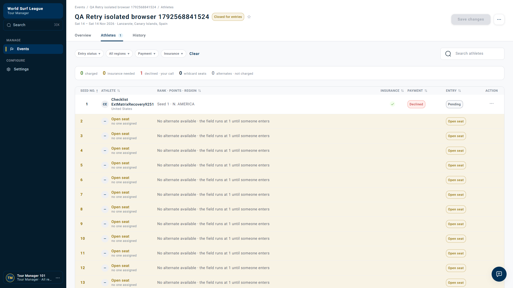

Matrix cases — total 110
44 PASS 51 PARTIAL 5 FAIL 5 REVIEW 5 BLOCKED
Native tests — not matrix-case counts
847 PASS 7 FAIL
Fresh live retry assertions
12 PASS
Fresh live recovery assertions
12 PASS 1 FAIL
How to read these results
PASS verifies the case within its named execution layer. PARTIAL has evidence but incomplete steps or external verification. BLOCKED was not executed. REVIEW needs product approval. FAIL has a failed acceptance assertion. Hundreds of passing native tests do not mean all 110 product cases passed.
Local worker tests advanced first-failure/clock conditions in disposable Postgres; this is stronger than the earlier function-only probe, but it is not a time-shifted dev CronJob or a live Stripe automatic retry.
Material failures
- RET-028: exact-time next-due calculation reselected the completed 24-hour slot instead of 72 hours.
- RET-067 / RET-078: withdrawn and other terminal entries can prepare a retry when FAILED eligibility remains. A repository-only withdrawal transaction reproduced this; the full application withdrawal/alternate safe path passed, and four terminal-state variants failed locally.
- RET-087: competition ignored a late successful outcome after withdrawal cancelled the charge. This proves a component reconciliation gap, not the absence of every possible Finance process.
- RET-105: live API recovery reached Collected/Confirmed while the open manager roster remained Declined/Pending for 90 seconds. Refresh corrected the display. Separate-session recording confirms the result.
No application fix or Jira ticket was created. Failure evidence is retained; the new regression tests intentionally remain failing against the inspected code.
Technical findings and exact reproduction
Download technical findings
Source locations, preconditions, expected/actual results, impact limits and suggested backend handling
# Payment retry execution: technical findings
These findings describe the inspected local source. The deployed revision was not verified. Suggested priorities below are QA recommendations, not assigned Jira priorities. No Jira ticket or application fix was created.
## F-01 — Completed retry offset can be selected again at exact boundary
- Matrix: RET-028. Suggested priority: P2, pending confirmation of impact through the complete result-consumer path.
- Source: `wsl-competition-service/src/competition/domain/payment_retries.py:80`, `next_retry_at`.
- Preconditions: version-16 policy, retryable failure, T0 = 20 October 2026 12:00 UTC, retry offsets 24 and 72 hours, grace 168 hours, `retries_sent=1`.
- Reproduction: call the real function with `now=T0+24h` after the first retry is recorded as sent.
- Expected: next due is 23 October 2026 12:00 UTC (T0+72h).
- Actual: next due is 21 October 2026 12:00 UTC (T0+24h), the already-used offset.
- Cause: the count only guards schedule exhaustion; the loop starts from the first configured offset and accepts `due >= now`.
- Evidence: `boundaries.xml`, `test_completed_retry_offset_is_not_rescheduled_at_same_instant`, failed assertion retained.
- Impact limit: this proves a scheduling calculation defect. A second provider charge was not demonstrated; worker claim/idempotency gates may reduce the end-to-end impact.
- Backend direction: track consumed schedule positions explicitly and preserve skip-past behavior. Test first-failure handling, delayed answers, manual failures, skipped offsets, and exact-time redeliveries before changing count semantics.
## F-02 — Manual retry preparation lacks an entry lifecycle guard
- Matrix: RET-067 and RET-078. Suggested priority: P2 for a defensive payment gate, with production reachability investigation required.
- Source: `wsl-competition-service/src/competition/application/entries.py:660`, `retry_payment_prepare`.
- Preconditions: a terminal entry still has an exposed FAILED charge eligible for manual retry.
- Reproduction A: parameterized application tests expose such a charge on Withdrawn, Removed, Not selected, and Expired entries; call manual retry preparation as Tour Manager.
- Reproduction B: in disposable Postgres, create and decline a charge, call the withdrawal repository directly, then call real manual retry preparation in the transaction.
- Expected: refuse the retry and stage no execute command for a terminal entry.
- Actual: preparation returned `chargeable=True`; execute was staged. Four unit variants and one real-DB acceptance assertion failed.
- Cause: preparation checks the exposed charge ID and claims the charge, without checking the current entry lifecycle.
- Critical scope distinction: reproduction B deliberately bypasses the application withdrawal orchestration. The complete application withdrawal path cancels charge eligibility and emits a release. A separate real-DB test running application withdrawal, alternate promotion, and the retry worker **passed**, with the old charge CANCELLED and no new scheduled execute. Fresh retries against the existing withdrawn dev fixtures also returned HTTP 409. This is not evidence that every ordinary withdrawal continues charging.
- Evidence: `lifecycle.xml`, `regressions-db.xml`; supporting safe-path evidence in `alternate-db.xml` and live retry JSON.
- Backend direction: enforce lifecycle eligibility at the transactional retry claim, then recheck at execution where practical. Preserve idempotent release and reconcile in-flight payment outcomes. A stale FAILED row must not be enough to charge a removed entrant.
## F-03 — Late success is ignored after competition charge cancellation
- Matrix: RET-087. Suggested priority: P2 for reconciliation visibility; financial impact requires provider/Finance correlation.
- Source: `wsl-competition-service/src/competition/infrastructure/persistence/repositories/events/entries.py:379`, `record_charge_result`.
- Preconditions: a REQUESTED competition charge is cancelled by withdrawal while an external attempt may already have started.
- Reproduction: create REQUESTED charge in disposable Postgres, withdraw through the repository, then deliver `succeeded=True` to the real charge-result repository method.
- Expected: preserve the terminal entry and record or route the late financial success for reconciliation.
- Actual: method returned `None`; the competition charge remained CANCELLED. The acceptance assertion failed.
- Cause: update permits OPEN and FAILED charge statuses; CANCELLED is excluded and produces an early return.
- Impact limit: the probe targets this component. It did not hold an actual provider request in flight, replay a complete live webhook/broker chain, prove a missing Finance record elsewhere, or establish a refund obligation.
- Evidence: `regressions-db.xml`, `test_late_success_is_not_lost_after_withdrawal_cancels_requested_charge`.
- Backend direction: maintain an immutable payment outcome or reconciliation record for late success without restoring the withdrawn entrant. Decide refund/manual review policy with Finance and make processing idempotent.
## F-04 — Open manager roster remains stale after successful card recovery
- Matrix: RET-105. Suggested priority: P3 for stale operational status; confirm intended live-update behavior with the product owner.
- Environment: live dev, 21 October 2026, separate authenticated athlete and manager browser contexts.
- Event: `01a15d6d-df77-76f9-99fa-5cff13be3f99`; entry: `01a15d6d-eb6b-762c-bf81-59240b572ff4`.
- Reproduction: confirm and charge the declining Stripe test card; leave the Tour Manager Athletes tab open; change the athlete's entry to a valid saved Visa from a separate session; observe the existing manager tab for 90 seconds; reload.
- Expected: the open roster reflects successful asynchronous recovery, with Collected payment, Confirmed entry, and updated counters.
- Actual: card change returned HTTP 202 at 07:47:41 UTC. API readback reached Collected/Confirmed, while the open roster remained Declined/Pending through the observation period. After refresh at 07:49:32 UTC, it displayed Collected. Exactly one successful history outcome was recorded; paid retry was rejected with HTTP 409.
- Evidence: `recovery-before-refresh.png`, `recovery-after-refresh.png`, `recovery-recording.webm`, and `recovery-results.json` in the published execution folder. Original shared-cookie observation was retested independently and is not used as sole proof.
- Code observation: `wsl-frontend/src/features/tour-manager/hooks/use-tour-manager.ts:401`, `useSeedList`, defines a query key and fetch function without a polling interval. This is consistent with the stale view, but the deployed revision and all global invalidation mechanisms were not verified, so it is a likely explanation rather than a proven production root cause.
- Frontend direction: invalidate or refresh relevant seed-list, summary and history queries on asynchronous payment updates, with bounded polling or a suitable event channel. Avoid relying only on mutations initiated in that manager tab. Preserve unsaved seed edits during refresh.
## Safe path established for the original withdrawal question
With a retryable decline 25 hours old in a disposable database, the complete application withdrawal cancelled the old charge. An alternate was promoted to seed 1 in a synthetic one-seat field. A real worker pass then emitted no execute for the old entrant. This verifies that controlled scheduled-retry path locally. It does not certify a full live event format, a payment already inside Stripe, or all execute/release message orderings.
## Time acceleration and reproducibility
Version-16 boundary fixtures explicitly use retry offsets `(24,72)`, notice offsets `(24,72,120,168)`, grace `168h`, and short-notice cutoff `10 days`. Worker tests advance injected clocks or seed old first-failure timestamps in disposable Postgres 16. No shared dev clock, UUID, first-failure timestamp, or payment policy was changed. Existing native suites also exercise code-default version 0, whose retry offsets/cutoff differ; those results are labelled separately.
New acceptance probes are in `tests/unit/test_retry_matrix_boundaries.py`, `tests/unit/test_retry_matrix_lifecycle.py`, and `tests/integration/test_retry_matrix_regressions.py` under the competition service. XML evidence contains the exact test names, assertions and timings. The seven failed native assertions represent the three findings above, not seven independent bugs. The final live browser result is reported separately in RET-105.
What ran and how time was accelerated
Native competition suites cover scheduling, policy pinning, notices, entries, field confirmation and move-up logic. Payment suites cover saved cards, execute/release state gates, repointing, decline classification and outcomes. Disposable Postgres tests verify due dispatch, notices, row claims, two competing workers, withdrawal cancellation, grace escalation and payment-state persistence.
Dedicated boundary tests use explicit version-16 rules at due minus 1ms, exact due and plus 1ms. The native code-default suites use their own default policy and are not represented as dev version-16 execution. No real days were waited and no global clock or shared dev policy was changed.
A separate Python 3.14 environment used checked-out models 0.6.0, messaging 0.30.0 and core 0.15.0. Remote dependency pins conflicted, so tests used an isolated local dependency installation. First collection lacked tzdata; that was corrected before the final successful competition suite. Deployed source revision was not verified.
Fresh live recovery and proof
Test-mode membership/card setup and entry-fee decline were real dev operations. Unknown card selection and athlete-role actions were tested before switching to valid Visa. Replay and successful recovery were then verified. The final retry used separate athlete and manager sessions so the manager page stayed authenticated throughout.
RET-012 Confirm and charge accepted: PASS RET-012 Declined test card leaves entry pending: PASS RET-101 Athlete cannot trigger Tour Manager retry: PASS RET-010 Athlete cannot read Tour Manager payment rules: PASS RET-060 Unknown saved-card identifier rejected: PASS RET-056 Valid test Visa accepted after decline: PASS RET-058 Replaying same card-change key is accepted safely: PASS RET-056 Successful valid-card recovery: PASS RET-056 Entry confirmed after collection: PASS RET-105 Open roster updates to Collected without refresh: FAIL RET-058 Exactly one successful history outcome: PASS RET-065 Retry after successful collection rejected: PASS RET-105 Collected persists after refresh: PASS
Open roster before refresh · After refresh

Raw browser context recording
Raw session includes API fixture setup and waiting. It is supporting context, not a claim that every API action is visible in the browser.
Recovery check data · Fresh manual-retry data
Unexecuted and limited branches
Cases still needing provider/broker fault control, real notification delivery, refunds or full live alternate fixtures are marked BLOCKED or PARTIAL individually. Do not infer a pass from related unit coverage. The earlier valid-card/withdrawal incident remains separately documented; its processor timing attribution is not resolved by this run.
Exported evidence was scanned for credentials. No refund was initiated; local database fixtures were disposable; shared dev settings and UUIDs were preserved.
RET-001 · Configuration and rule pinning · P0 · Live dev
Read current rules PASS
Preconditions: Authenticated manager; baseline version 16
Steps: GET payment-rules and compare all values
Expected: Retry offsets 24/72h; grace 168h; notices 24/72/120/168h; cutoff 10d
Observed: Fresh authenticated GET returned HTTP 200 with version-16 settings; actual values retained in live evidence.
Remaining / limit: None within the stated layer; not an all-layer certification.
Live assertions
[
{
"name": "Retry rules are readable",
"status": "PASS",
"expected": 200,
"actual": 200
}
]RET-002 · Configuration and rule pinning · P1 · Unit + Postgres
Pin rules on first failure PARTIAL
Preconditions: Fresh retryable charge; version 16 active
Steps: Record first failure at T0; inspect charge row
Expected: first_failed_at=T0; version 16 and effective deadline pinned once
Observed: First-failure pinning and default-version DB scheduling passed.
Remaining / limit: No dev database read proving this new charge is pinned to version 16; version-16 fixtures also exercised locally.
2 executed native evidence item(s)
competition-integration::test_a_decline_is_scheduled_and_one_pass_sends_the_retry_and_the_notice — PASScompetition-unit::test_the_first_decline_starts_the_clock_and_schedules_the_first_retry — PASS
RET-003 · Configuration and rule pinning · P0 · Unit
Rule change cannot reschedule existing charge PASS
Preconditions: Charge already pinned to version 16
Steps: Change isolated test organisation to version 17; process another failure
Expected: Original charge retains version 16, T0 and deadline; no revised promise
Observed: Existing charge retained its first clock and pinned rules when current settings changed in isolated stores.
Remaining / limit: None within the stated layer; not an all-layer certification.
1 executed native evidence item(s)
competition-unit::test_editing_the_rules_later_cannot_move_a_date_an_athlete_was_given — PASS
RET-004 · Configuration and rule pinning · P1 · Unit
New charge uses new rule version PASS
Preconditions: Isolated organisation has version 17
Steps: Fail a new independent charge
Expected: New charge uses version 17; older charge unchanged
Observed: New charge uses newly saved rules in the application test.
Remaining / limit: None within the stated layer; not an all-layer certification.
1 executed native evidence item(s)
competition-unit::test_a_charge_that_started_after_the_rules_were_saved_runs_on_them — PASS
RET-005 · Configuration and rule pinning · P1 · Unit
Repeated failure preserves first-failure clock PASS
Preconditions: Failure at T0 already recorded
Steps: Record failures at T0+25h and T0+73h
Expected: T0 never moves; grace is not restarted
Observed: Later declines and manual failure do not restart the first-failure clock.
Remaining / limit: None within the stated layer; not an all-layer certification.
2 executed native evidence item(s)
competition-unit::test_a_later_decline_keeps_the_first_clock_and_schedules_the_next_retry — PASScompetition-unit::test_a_manual_retry_that_fails_does_not_restart_the_schedule — PASS
RET-006 · Configuration and rule pinning · P1 · Unit + Postgres
Rule version zero defaults PASS
Preconditions: Isolated organisation has no saved settings
Steps: Create first failure; read pinned version and defaults
Expected: Version 0 uses code defaults; do not substitute dev version-16 values
Observed: Default-version behavior verified; native defaults differ from saved dev version 16.
Remaining / limit: None within the stated layer; not an all-layer certification.
3 executed native evidence item(s)
competition-integration::test_a_decline_is_scheduled_and_one_pass_sends_the_retry_and_the_notice — PASScompetition-unit::test_the_defaults_are_what_a_charge_with_no_pinned_version_falls_back_to — PASScompetition-unit::test_an_organisation_that_never_saved_is_on_the_defaults_at_version_zero — PASS
RET-007 · Configuration and rule pinning · P1 · Unit
Reject invalid configuration PARTIAL
Preconditions: Isolated settings tenant
Steps: Try duplicate/descending/negative/fractional offsets; retry beyond grace; invalid types and bounds
Expected: Invalid input rejected with actionable errors and no partial save; exact numeric limits follow schema
Observed: Ascending schedules, duplicate offsets and retry-after-grace rejection tested.
Remaining / limit: All numeric schema/type limits and every invalid HTTP payload were not exercised on an isolated dev settings tenant.
9 executed native evidence item(s)
competition-unit::test_each_retry_is_later_than_the_one_before[retries0] — PASScompetition-unit::test_each_retry_is_later_than_the_one_before[retries1] — PASScompetition-unit::test_each_retry_is_later_than_the_one_before[retries2] — PASScompetition-unit::test_each_notice_is_later_than_the_one_before[notices0] — PASScompetition-unit::test_each_notice_is_later_than_the_one_before[notices1] — PASScompetition-unit::test_a_refused_save_writes_nothing[named0-RetryScheduleError] — PASScompetition-unit::test_a_refused_save_writes_nothing[named1-NoticeScheduleError] — PASScompetition-unit::test_a_refused_save_writes_nothing[named2-RetryAfterGraceError] — PASScompetition-unit::test_a_refused_save_writes_nothing[named3-RetryAfterGraceError] — PASS
RET-008 · Configuration and rule pinning · P1 · Unit
Zero automatic retries PASS
Preconditions: Isolated policy retry list empty
Steps: Fail a charge and advance all notice boundaries
Expected: No automatic execute; notices and grace decision follow policy
Observed: Empty automatic schedule produces no retry and retains notification behavior.
Remaining / limit: None within the stated layer; not an all-layer certification.
3 executed native evidence item(s)
boundaries::test_zero_retry_policy_still_has_notices — PASScompetition-unit::test_no_automatic_retry_is_no_retry — PASScompetition-unit::test_no_automatic_retry_is_valid_with_any_grace_period — PASS
RET-009 · Configuration and rule pinning · P1 · Unit
Concurrent settings edits PARTIAL
Preconditions: Two managers read same settings version
Steps: Submit different updates using same expected version
Expected: One wins; stale write rejected; no lost update
Observed: Lost settings-version race stages no history.
Remaining / limit: No simultaneous live or real-DB version-16 settings edit was performed.
1 executed native evidence item(s)
competition-unit::test_losing_a_race_for_the_next_version_stages_no_history — PASS
RET-010 · Configuration and rule pinning · P1 · Live dev + Unit
Settings access control PARTIAL
Preconditions: Athlete and unauthorised manager sessions
Steps: Read/edit payment rules
Expected: Unauthorised operations rejected; no change to shared configuration
Observed: Athlete read denial tested live; role refusal covered locally.
Remaining / limit: Manager edit-denial combinations were not all submitted against dev.
Recovery assertions
[
{
"name": "RET-010 Athlete cannot read Tour Manager payment rules",
"expected": 403,
"actual": 403,
"status": "PASS",
"timestamp": "2026-10-21T07:47:32.278Z"
}
]2 executed native evidence item(s)
competition-unit::test_a_non_hub_role_is_refused — PASScompetition-unit::test_a_non_hub_role_cannot_promote — PASS
RET-011 · Failure classification and first attempt · P0 · Postgres + Unit
Retryable initial decline PARTIAL
Preconditions: Eligible field entry; retryable provider failure
Steps: Confirm and charge; consume failure at T0
Expected: Payment pending; first retry scheduled at T0+24h; correct amount/card/reference
Observed: Real-DB retryable failure scheduled an execute and notice in a worker pass.
Remaining / limit: Failure was injected through the application boundary locally; no live Stripe retryable failure/automatic dev worker trace.
1 executed native evidence item(s)
competition-integration::test_a_decline_is_scheduled_and_one_pass_sends_the_retry_and_the_notice — PASS
RET-012 · Failure classification and first attempt · P0 · Live dev + Postgres
Needs-new-method decline PARTIAL
Preconditions: Provider returns needs_new_method
Steps: Consume failure; advance past 24h and 72h
Expected: No automatic charge on the invalid card; recovery guidance/notices remain
Observed: Fresh test card genuinely declined; local worker does not automatically charge needs-new-method.
Remaining / limit: A dev scheduled worker was not time-shifted through every offset for that fixture.
Recovery assertions
[
{
"name": "RET-012 Confirm and charge accepted",
"expected": 200,
"actual": 200,
"status": "PASS",
"timestamp": "2026-10-21T07:47:28.973Z"
},
{
"name": "RET-012 Declined test card leaves entry pending",
"expected": "declined",
"actual": "declined",
"status": "PASS",
"timestamp": "2026-10-21T07:47:31.670Z"
}
]2 executed native evidence item(s)
competition-integration::test_a_decline_is_scheduled_and_one_pass_sends_the_retry_and_the_notice — PASScompetition-unit::test_a_decline_that_needs_a_new_card_is_never_retried_but_is_still_noticed — PASS
RET-013 · Failure classification and first attempt · P0 · Unit
Authentication-required decline PARTIAL
Preconditions: Provider returns action_required
Steps: Consume failure; tick at all retry boundaries
Expected: No blind off-session retry; athlete is offered appropriate authentication recovery
Observed: Off-session action-required execution refused locally.
Remaining / limit: No actual browser 3DS recovery challenge or dev scheduler trace.
7 executed native evidence item(s)
competition-unit::test_a_decline_that_cannot_be_retried_has_no_retry[action_required] — PASScompetition-unit::test_a_decline_that_cannot_be_retried_has_no_retry[needs_new_method] — PASScompetition-unit::test_a_decline_that_cannot_be_retried_has_no_retry[None] — PASScompetition-unit::test_a_decline_that_cannot_be_retried_is_failed_with_nothing_scheduled[action_required] — PASScompetition-unit::test_a_decline_that_cannot_be_retried_is_failed_with_nothing_scheduled[needs_new_method] — PASScompetition-unit::test_a_decline_that_cannot_be_retried_is_failed_with_nothing_scheduled[None] — PASSpayment-unit::test_action_required_is_rejected_never_retried_off_session — PASS
RET-014 · Failure classification and first attempt · P1 · Unit
Unknown failure class PASS
Preconditions: Failure class null or unrecognised
Steps: Consume failure; run due ticks
Expected: No automatic retry based on an assumed classification
Observed: Null and unknown classifications have no automatic schedule.
Remaining / limit: None within the stated layer; not an all-layer certification.
5 executed native evidence item(s)
boundaries::test_non_retryable_never_scheduled[needs_new_method] — PASSboundaries::test_non_retryable_never_scheduled[action_required] — PASSboundaries::test_non_retryable_never_scheduled[None] — PASSboundaries::test_non_retryable_never_scheduled[unexpected] — PASScompetition-unit::test_only_a_retryable_decline_is_ever_retried — PASS
RET-015 · Failure classification and first attempt · P1 · Unit + Postgres
First payment refusal without attempt PASS
Preconditions: No usable saved card; no prior failure class
Steps: Consume attempted=false result
Expected: Clock starts for notices/escalation; no provider attempt falsely recorded; no auto retry
Observed: A non-attempt starts recovery clock without pretending a provider attempt occurred.
Remaining / limit: None within the stated layer; not an all-layer certification.
2 executed native evidence item(s)
competition-integration::test_a_charge_payment_refused_to_attempt_still_starts_the_grace_period — PASScompetition-unit::test_a_first_refusal_starts_the_clock_and_is_never_retried — PASS
RET-016 · Failure classification and first attempt · P1 · Unit
Refused retry preserves earlier classification PASS
Preconditions: Prior retryable decline then attempted=false
Steps: Consume refusal and inspect retry state
Expected: Earlier genuine failure class preserved; counters distinguish refusal from attempted decline
Observed: Earlier genuine decline classification survives an attempted=false result.
Remaining / limit: None within the stated layer; not an all-layer certification.
1 executed native evidence item(s)
competition-unit::test_a_refused_retry_keeps_the_class_of_the_decline_before_it — PASS
RET-017 · Failure classification and first attempt · P0 · Unit + Postgres
Successful initial payment PARTIAL
Preconditions: Valid saved test card
Steps: Confirm and charge; consume success twice
Expected: One successful charge; eligible entry confirmed; no recovery schedule
Observed: Payment execution and paid transition passed locally.
Remaining / limit: Fresh live event scenario began with decline, not an initial successful entry-fee collection; duplicate initial-success event not newly exercised end to end.
2 executed native evidence item(s)
payment-integration::test_charge_lifecycle_ready_charging_paid — PASSpayment-unit::test_happy_path_charges_the_pinned_saved_payment_method — PASS
RET-018 · Failure classification and first attempt · P1 · Unit
Failure with missing competition charge PASS
Preconditions: Unknown entry/reference or unrelated organisation
Steps: Deliver failure fact
Expected: No unrelated state changed; diagnostic behavior recorded; no invented charge
Observed: Missing competition charge causes no invented state or scheduled payment.
Remaining / limit: None within the stated layer; not an all-layer certification.
1 executed native evidence item(s)
competition-unit::test_a_decline_with_no_charge_row_does_nothing — PASS
RET-019 · Failure classification and first attempt · P1 · Unit
Duplicate first-failure event PARTIAL
Preconditions: Same event delivered twice
Steps: Consume duplicate with identical event identity
Expected: T0/policy/deadline unchanged; no duplicate notice/execute/audit effects
Observed: Pin-once and redelivery safety covered in selected unit tests.
Remaining / limit: No full first-failure consumer redelivery and real bus/outbox trace for this exact case.
2 executed native evidence item(s)
competition-unit::test_the_first_decline_starts_the_clock_and_schedules_the_first_retry — PASSpayment-unit::test_no_payment_intent_redelivery_safety_does_not_double_announce — PASS
RET-020 · Failure classification and first attempt · P0 · Unit + Postgres
Failure after success PARTIAL
Preconditions: Charge already paid
Steps: Deliver older failure fact
Expected: Paid state does not regress; retry not restarted
Observed: Stale outcomes/illegal terminal transitions rejected locally.
Remaining / limit: No live provider paid-then-stale-failure delivery sequence.
8 executed native evidence item(s)
payment-integration::test_apply_charge_outcome_drops_a_stale_redelivery — PASSpayment-unit::test_terminal_states_refuse_every_further_transition[ready-paid] — PASSpayment-unit::test_terminal_states_refuse_every_further_transition[ready-released] — PASSpayment-unit::test_terminal_states_refuse_every_further_transition[charging-paid] — PASSpayment-unit::test_terminal_states_refuse_every_further_transition[charging-released] — PASSpayment-unit::test_terminal_states_refuse_every_further_transition[retryable-paid] — PASSpayment-unit::test_terminal_states_refuse_every_further_transition[retryable-released] — PASSpayment-unit::test_watermark_refuses_a_real_change_at_or_before_the_watermark — PASS
RET-021 · Retry schedule and exact boundaries · P0 · Unit / explicit version 16
First due boundary PASS
Preconditions: Retryable charge scheduled for T0+24h
Steps: Tick at due minus 1ms, exactly due, due plus 1ms on separate fixtures
Expected: No early dispatch; one dispatch at due; later duplicate tick cannot repeat it
Observed: At due minus 1ms no dispatch; exactly due and plus 1ms dispatch once; subsequent tick does not repeat.
Remaining / limit: None within the stated layer; not an all-layer certification.
6 executed native evidence item(s)
lifecycle::test_matrix_worker_dispatch_exact_due_boundaries[-1-24] — PASSlifecycle::test_matrix_worker_dispatch_exact_due_boundaries[-1-72] — PASSlifecycle::test_matrix_worker_dispatch_exact_due_boundaries[0-24] — PASSlifecycle::test_matrix_worker_dispatch_exact_due_boundaries[0-72] — PASSlifecycle::test_matrix_worker_dispatch_exact_due_boundaries[1-24] — PASSlifecycle::test_matrix_worker_dispatch_exact_due_boundaries[1-72] — PASS
RET-022 · Retry schedule and exact boundaries · P0 · Unit / explicit version 16
Second due boundary PASS
Preconditions: First retry failed; second scheduled at T0+72h
Steps: Tick at due minus 1ms, due, due plus 1ms
Expected: No early second attempt; one at due; first-failure anchor retained
Observed: At due minus 1ms no dispatch; exactly due and plus 1ms dispatch once; subsequent tick does not repeat.
Remaining / limit: None within the stated layer; not an all-layer certification.
6 executed native evidence item(s)
lifecycle::test_matrix_worker_dispatch_exact_due_boundaries[-1-24] — PASSlifecycle::test_matrix_worker_dispatch_exact_due_boundaries[-1-72] — PASSlifecycle::test_matrix_worker_dispatch_exact_due_boundaries[0-24] — PASSlifecycle::test_matrix_worker_dispatch_exact_due_boundaries[0-72] — PASSlifecycle::test_matrix_worker_dispatch_exact_due_boundaries[1-24] — PASSlifecycle::test_matrix_worker_dispatch_exact_due_boundaries[1-72] — PASS
RET-023 · Retry schedule and exact boundaries · P0 · Unit
72 hours is not relative to first retry PASS
Preconditions: First attempt ran late at T0+25h
Steps: Process its failure and inspect next due
Expected: Second due stays T0+72h, not T0+97h
Observed: Next retry remains anchored to original failure rather than previous retry time.
Remaining / limit: None within the stated layer; not an all-layer certification.
6 executed native evidence item(s)
competition-unit::test_each_retry_is_counted_from_the_first_failure_not_the_last[0-0-24] — PASScompetition-unit::test_each_retry_is_counted_from_the_first_failure_not_the_last[25-1-72] — PASScompetition-unit::test_each_retry_is_counted_from_the_first_failure_not_the_last[73-2-168] — PASScompetition-unit::test_each_retry_is_counted_from_the_first_failure_not_the_last[24-0-24] — PASScompetition-unit::test_each_retry_is_counted_from_the_first_failure_not_the_last[72-1-72] — PASScompetition-unit::test_a_later_decline_keeps_the_first_clock_and_schedules_the_next_retry — PASS
RET-024 · Retry schedule and exact boundaries · P0 · Unit / explicit version 16
Retry attempts exhausted PASS
Preconditions: Two configured automatic attempts sent and failed
Steps: Advance beyond 72h while before grace end
Expected: No third automatic attempt; no implied retry at 168h
Observed: After failures of the 24h and 72h attempts, no third automatic retry is scheduled.
Remaining / limit: None within the stated layer; not an all-layer certification.
1 executed native evidence item(s)
lifecycle::test_matrix_no_third_retry_under_version16 — PASS
RET-025 · Retry schedule and exact boundaries · P1 · Unit
Manual retry does not consume automatic index incorrectly PARTIAL
Preconditions: Manual retry before 24h fails
Steps: Inspect retries_sent and next due
Expected: Manual and automatic attempts distinguished; configured automatic count not silently consumed
Observed: Manual failure does not reset schedule or create a burst.
Remaining / limit: Exact end-to-end manual versus automatic counter accounting was not independently queried in dev DB.
2 executed native evidence item(s)
competition-unit::test_a_manual_retry_that_fails_does_not_restart_the_schedule — PASScompetition-unit::test_a_failed_manual_retry_is_not_followed_by_a_burst_of_automatic_ones — PASS
RET-026 · Retry schedule and exact boundaries · P1 · Unit
Late manual decline skips old due times PASS
Preconditions: Manual retry fails at T0+50h
Steps: Calculate next due
Expected: Next retry 72h; no immediate replay of missed 24h attempt
Observed: Past offsets skipped; exhausted configured schedule produces no future retry.
Remaining / limit: None within the stated layer; not an all-layer certification.
5 executed native evidence item(s)
competition-unit::test_a_retry_whose_time_has_passed_is_skipped_not_sent_at_once[100-168] — PASScompetition-unit::test_a_retry_whose_time_has_passed_is_skipped_not_sent_at_once[30-72] — PASScompetition-unit::test_a_retry_whose_time_has_passed_is_skipped_not_sent_at_once[73-168] — PASScompetition-unit::test_when_every_retry_in_the_rules_has_passed_there_is_none — PASSlifecycle::test_matrix_no_third_retry_under_version16 — PASS
RET-027 · Retry schedule and exact boundaries · P1 · Unit
Failure after final offset PASS
Preconditions: Manual failure at T0+100h
Steps: Recalculate automatic due
Expected: No remaining automatic due; no burst of backdated attempts
Observed: Past offsets skipped; exhausted configured schedule produces no future retry.
Remaining / limit: None within the stated layer; not an all-layer certification.
5 executed native evidence item(s)
competition-unit::test_a_retry_whose_time_has_passed_is_skipped_not_sent_at_once[100-168] — PASScompetition-unit::test_a_retry_whose_time_has_passed_is_skipped_not_sent_at_once[30-72] — PASScompetition-unit::test_a_retry_whose_time_has_passed_is_skipped_not_sent_at_once[73-168] — PASScompetition-unit::test_when_every_retry_in_the_rules_has_passed_there_is_none — PASSlifecycle::test_matrix_no_third_retry_under_version16 — PASS
RET-028 · Retry schedule and exact boundaries · P0 · Unit / exact boundary
Exact-due rescheduling cannot create duplicate attempt FAIL
Preconditions: Failure/replay lands exactly on configured offset
Steps: Recalculate due and tick repeatedly
Expected: At most one logical attempt for that offset; no loop at the same timestamp
Observed: With retries_sent=1 and now exactly T0+24h, next_retry_at selected 24h again instead of 72h.
Remaining / limit: Provider duplicate capture not demonstrated; failed scheduling acceptance assertion is retained.
1 executed native evidence item(s)
boundaries::test_completed_retry_offset_is_not_rescheduled_at_same_instant — FAILdef test_completed_retry_offset_is_not_rescheduled_at_same_instant():
"""Acceptance criterion RET-028: an already-sent offset must not be chosen again."""
due=next_retry_at(RULES,first_failed_at=T0,retries_sent=1,failure_class='retryable',deadline=D,now=T0+dt.timedelta(hours=24))
> assert due==T0+dt.timedelta(hours=72), 'Already sent 24h offset was selected again at its exact timestamp'
E AssertionError: Already sent 24h offset was selected again at its exact timestamp
E assert datetime.datetime(2026, 10, 21, 12, 0, tzinfo=datetime.timezone.utc) == (datetime.datetime(2026, 10, 20, 12, 0, tzinfo=datetime.timezone.utc) + datetime.timedelta(days=3))
E + where datetime.timedelta(days=3) = <class 'datetime.timedelta'>(hours=72)
E + where <class 'datetime.timedelta'> = dt.timedelta
tests\unit\test_retry_matrix_boundaries.py:65: AssertionError
RET-029 · Retry schedule and exact boundaries · P1 · Unit + Postgres
Different attempt keys, same charge reference PASS
Preconditions: Two legitimate scheduled attempts
Steps: Inspect execute commands
Expected: Keys retry-{chargeId}-1 and retry-{chargeId}-2; same original entry reference
Observed: Scheduled commands use per-attempt keys with unchanged entry reference.
Remaining / limit: None within the stated layer; not an all-layer certification.
2 executed native evidence item(s)
competition-integration::test_a_decline_is_scheduled_and_one_pass_sends_the_retry_and_the_notice — PASScompetition-unit::test_each_attempt_has_its_own_request_id_so_payment_treats_it_as_new — PASS
RET-030 · Retry schedule and exact boundaries · P1 · Unit
Fresh missing timer fields PARTIAL
Preconditions: Legacy/incomplete charge lacks first_failed_at or due
Steps: Run retry worker
Expected: No accidental charge; explicit skip/recovery behavior; no whole-pass crash
Observed: Missing first-failure timestamp caused no dispatch.
Remaining / limit: All legacy/missing-due combinations and operational diagnostic paths not enumerated.
1 executed native evidence item(s)
lifecycle::test_matrix_no_first_failure_timestamp_does_not_dispatch — PASS
RET-031 · Retry schedule and exact boundaries · P1 · Unit
Event start unavailable PASS
Preconditions: Retryable charge with no event start
Steps: Pin deadline
Expected: Deadline=T0+168h; graceful fallback recorded
Observed: Missing event-start timestamp falls back to the grace deadline.
Remaining / limit: None within the stated layer; not an all-layer certification.
1 executed native evidence item(s)
boundaries::test_no_event_start_uses_grace — PASS
RET-032 · Retry schedule and exact boundaries · P0 · Unit + Postgres
Amount and currency cannot drift PASS
Preconditions: Entry amount/card agreement established
Steps: Change unrelated prices; run retries
Expected: Charge uses agreed stored amount/currency; no new tax/fee calculation without explicit re-agreement
Observed: Agreed fee and pinned saved method remain authoritative; mismatched re-create rejected.
Remaining / limit: None within the stated layer; not an all-layer certification.
3 executed native evidence item(s)
competition-unit::test_each_charge_records_what_that_member_agreed_to_not_what_the_event_says_now — PASSpayment-integration::test_create_or_none_stores_the_agreed_amount — PASSpayment-unit::test_execute_charges_the_pinned_method_not_a_newer_active_one — PASS
RET-033 · Grace period and event cutoff · P0 · Unit / explicit version 16
Seven-day deadline PASS
Preconditions: Event sufficiently far away
Steps: Tick at T0+168h minus 1ms, exactly 168h, plus 1ms
Expected: Before deadline no premature expiry; at deadline escalate if no in-flight attempt; do not auto-withdraw
Observed: At 168h minus 1ms no flag; at/after deadline flag when no valid in-flight answer window.
Remaining / limit: None within the stated layer; not an all-layer certification.
3 executed native evidence item(s)
lifecycle::test_matrix_deadline_boundary_without_inflight[-1] — PASSlifecycle::test_matrix_deadline_boundary_without_inflight[0] — PASSlifecycle::test_matrix_deadline_boundary_without_inflight[1] — PASS
RET-034 · Grace period and event cutoff · P0 · Unit + Postgres
Event cutoff wins PARTIAL
Preconditions: Event cutoff=T0+48h
Steps: Fail at T0 and tick at 24h/48h/72h
Expected: 24h retry eligible; 72h retry not scheduled; escalate at 48h
Observed: Shortened deadline calculation and worker cutoff behavior passed.
Remaining / limit: Native DB seed-policy test uses default nine-day setting; explicit 10-day cutoff arithmetic verified locally, not full live 48h sequence.
9 executed native evidence item(s)
boundaries::test_effective_deadline_around_cutoff[-1] — PASSboundaries::test_effective_deadline_around_cutoff[0] — PASSboundaries::test_effective_deadline_around_cutoff[1] — PASSboundaries::test_effective_deadline_around_cutoff[48] — PASSboundaries::test_effective_deadline_around_cutoff[168] — PASSboundaries::test_effective_deadline_around_cutoff[240] — PASScompetition-integration::test_the_deadline_is_nine_days_before_the_event_when_that_comes_first — PASScompetition-unit::test_the_deadline_is_nine_days_before_the_event_when_that_comes_first — PASScompetition-unit::test_a_notice_after_the_deadline_is_not_sent_but_the_flag_is — PASS
RET-035 · Grace period and event cutoff · P1 · Unit
Grace deadline wins PASS
Preconditions: Event cutoff later than T0+168h
Steps: Pin deadline
Expected: Use seven-day grace, not later event cutoff
Observed: Deadline equals the earlier of grace and event cutoff, including equality.
Remaining / limit: None within the stated layer; not an all-layer certification.
6 executed native evidence item(s)
boundaries::test_effective_deadline_around_cutoff[-1] — PASSboundaries::test_effective_deadline_around_cutoff[0] — PASSboundaries::test_effective_deadline_around_cutoff[1] — PASSboundaries::test_effective_deadline_around_cutoff[48] — PASSboundaries::test_effective_deadline_around_cutoff[168] — PASSboundaries::test_effective_deadline_around_cutoff[240] — PASS
RET-036 · Grace period and event cutoff · P1 · Unit
Cutoff and grace equal PASS
Preconditions: Event cutoff exactly T0+168h
Steps: Pin deadline and tick boundary
Expected: One effective deadline; no duplicate escalation
Observed: Deadline equals the earlier of grace and event cutoff, including equality.
Remaining / limit: None within the stated layer; not an all-layer certification.
6 executed native evidence item(s)
boundaries::test_effective_deadline_around_cutoff[-1] — PASSboundaries::test_effective_deadline_around_cutoff[0] — PASSboundaries::test_effective_deadline_around_cutoff[1] — PASSboundaries::test_effective_deadline_around_cutoff[48] — PASSboundaries::test_effective_deadline_around_cutoff[168] — PASSboundaries::test_effective_deadline_around_cutoff[240] — PASS
RET-037 · Grace period and event cutoff · P0 · Unit + Postgres
Failure inside short-notice window PARTIAL
Preconditions: T0 is later than event minus 10 days
Steps: Record failure then worker tick
Expected: No automatic retry; escalate on processing without granting fresh seven days
Observed: Failure inside short-notice window flags rather than creates automatic retries.
Remaining / limit: Native integration uses code-default nine days, not an altered dev ten-day clock.
3 executed native evidence item(s)
competition-integration::test_a_payment_failing_inside_the_last_nine_days_is_flagged_at_once — PASScompetition-unit::test_a_payment_failing_inside_the_window_has_a_deadline_already_past — PASScompetition-unit::test_a_payment_failing_inside_the_window_is_flagged_at_once_and_never_retried — PASS
RET-038 · Grace period and event cutoff · P0 · Unit
Failure exactly at event cutoff PARTIAL
Preconditions: T0 equals event minus 10 days
Steps: Record failure then tick at same instant
Expected: No future retry; escalation is due immediately
Observed: Past/equal/imminent cutoff arithmetic covered, including negative remaining time.
Remaining / limit: Not all exact first-failure worker invocations at ±1ms and already-started event variants have a complete live/DB execution.
9 executed native evidence item(s)
boundaries::test_effective_deadline_around_cutoff[-1] — PASSboundaries::test_effective_deadline_around_cutoff[0] — PASSboundaries::test_effective_deadline_around_cutoff[1] — PASSboundaries::test_effective_deadline_around_cutoff[48] — PASSboundaries::test_effective_deadline_around_cutoff[168] — PASSboundaries::test_effective_deadline_around_cutoff[240] — PASScompetition-integration::test_a_payment_failing_inside_the_last_nine_days_is_flagged_at_once — PASScompetition-unit::test_a_payment_failing_inside_the_window_has_a_deadline_already_past — PASScompetition-unit::test_a_payment_failing_inside_the_window_is_flagged_at_once_and_never_retried — PASS
RET-039 · Grace period and event cutoff · P1 · Unit
Failure one instant before cutoff PARTIAL
Preconditions: Cutoff=T0+1ms
Steps: Record failure; tick before/at/after cutoff
Expected: No retry that cannot fit; exact escalation boundary respected
Observed: Past/equal/imminent cutoff arithmetic covered, including negative remaining time.
Remaining / limit: Not all exact first-failure worker invocations at ±1ms and already-started event variants have a complete live/DB execution.
9 executed native evidence item(s)
boundaries::test_effective_deadline_around_cutoff[-1] — PASSboundaries::test_effective_deadline_around_cutoff[0] — PASSboundaries::test_effective_deadline_around_cutoff[1] — PASSboundaries::test_effective_deadline_around_cutoff[48] — PASSboundaries::test_effective_deadline_around_cutoff[168] — PASSboundaries::test_effective_deadline_around_cutoff[240] — PASScompetition-integration::test_a_payment_failing_inside_the_last_nine_days_is_flagged_at_once — PASScompetition-unit::test_a_payment_failing_inside_the_window_has_a_deadline_already_past — PASScompetition-unit::test_a_payment_failing_inside_the_window_is_flagged_at_once_and_never_retried — PASS
RET-040 · Grace period and event cutoff · P1 · Unit
Event today or already started PARTIAL
Preconditions: Failure after cutoff and event-start boundary
Steps: Record decline and run worker
Expected: No automatic recovery chase extending into event; TM action required
Observed: Past/equal/imminent cutoff arithmetic covered, including negative remaining time.
Remaining / limit: Not all exact first-failure worker invocations at ±1ms and already-started event variants have a complete live/DB execution.
9 executed native evidence item(s)
boundaries::test_effective_deadline_around_cutoff[-1] — PASSboundaries::test_effective_deadline_around_cutoff[0] — PASSboundaries::test_effective_deadline_around_cutoff[1] — PASSboundaries::test_effective_deadline_around_cutoff[48] — PASSboundaries::test_effective_deadline_around_cutoff[168] — PASSboundaries::test_effective_deadline_around_cutoff[240] — PASScompetition-integration::test_a_payment_failing_inside_the_last_nine_days_is_flagged_at_once — PASScompetition-unit::test_a_payment_failing_inside_the_window_has_a_deadline_already_past — PASScompetition-unit::test_a_payment_failing_inside_the_window_is_flagged_at_once_and_never_retried — PASS
RET-041 · Grace period and event cutoff · P0 · Unit / observed current code
Retry exactly at cutoff REVIEW
Preconditions: Isolated policy permits due==effective deadline
Steps: Tick at that instant
Expected: Current code permits due retry before flag; confirm whether Product accepts this against strict cutoff wording
Observed: Current worker dispatches the due retry at the effective cutoff.
Remaining / limit: DEC-02: Product must approve exact-cutoff retry before acceptance verdict.
1 executed native evidence item(s)
lifecycle::test_matrix_retry_exactly_at_cutoff_current_code — PASS
RET-042 · Grace period and event cutoff · P0 · Unit / observed current code
Late tick versus strict cutoff REVIEW
Preconditions: Due retry before deadline; worker wakes after cutoff but within 24h tolerance
Steps: Tick and inspect dispatch
Expected: Code can dispatch a previously scheduled retry after deadline; decide strict stop requirement before sign-off
Observed: A previously scheduled retry can dispatch at hour 25 when event cutoff was hour 24.
Remaining / limit: DEC-01: bounded late dispatch conflicts with a strictly interpreted event cutoff.
1 executed native evidence item(s)
lifecycle::test_matrix_due_retry_after_cutoff_within_late_window_current_code — PASS
RET-043 · Grace period and event cutoff · P1 · Unit / observed current code
UTC midnight versus venue midnight REVIEW
Preconditions: Same date at UTC-10 and UTC+14 venues
Steps: Compare event cutoff timestamps
Expected: Current code uses UTC date midnight; confirm business timezone requirement and any hour-level discrepancy
Observed: Event start for retry cutoff is UTC date midnight.
Remaining / limit: DEC-03: venue-local versus UTC policy needs confirmation.
1 executed native evidence item(s)
boundaries::test_current_utc_event_midnight_is_explicit — PASS
RET-044 · Grace period and event cutoff · P1 · Unit
DST/leap-day/year rollover PASS
Preconditions: T0 near DST change, Feb 29 or Dec 31
Steps: Advance elapsed 24/72/168 hours
Expected: No duplicated/skipped offsets from local clock changes; exact UTC elapsed durations
Observed: UTC elapsed-duration offsets held across DST season, leap day and year end samples.
Remaining / limit: None within the stated layer; not an all-layer certification.
3 executed native evidence item(s)
boundaries::test_dst_leap_year_and_year_rollover_elapsed_offsets[start0] — PASSboundaries::test_dst_leap_year_and_year_rollover_elapsed_offsets[start1] — PASSboundaries::test_dst_leap_year_and_year_rollover_elapsed_offsets[start2] — PASS
RET-045 · Notifications and escalation · P1 · Unit
All four notice boundaries PASS
Preconditions: Unpaid eligible entry; no prior notices
Steps: Parameterise N=24/72/120/168h; tick N-1ms/N/N+1ms
Expected: Each due notice once; none early; repeated tick does not duplicate
Observed: All four notification thresholds tested at ±1ms and exact time; repeat notice suppression covered.
Remaining / limit: None within the stated layer; not an all-layer certification.
13 executed native evidence item(s)
boundaries::test_notice_exact_boundary[-1-24] — PASSboundaries::test_notice_exact_boundary[-1-72] — PASSboundaries::test_notice_exact_boundary[0-24] — PASSboundaries::test_notice_exact_boundary[0-72] — PASSboundaries::test_notice_exact_boundary[1-24] — PASSboundaries::test_notice_exact_boundary[1-72] — PASSboundaries::test_late_notice_exact_boundary[-1-120-3] — PASSboundaries::test_late_notice_exact_boundary[-1-168-4] — PASSboundaries::test_late_notice_exact_boundary[0-120-3] — PASSboundaries::test_late_notice_exact_boundary[0-168-4] — PASSboundaries::test_late_notice_exact_boundary[1-120-3] — PASSboundaries::test_late_notice_exact_boundary[1-168-4] — PASScompetition-unit::test_each_notice_is_sent_once — PASS
RET-046 · Notifications and escalation · P1 · Unit + Postgres
Non-retryable card still notified PASS
Preconditions: Needs-new-method or action-required failure
Steps: Advance notice boundaries before deadline
Expected: Actionable recovery notices sent without automatic off-session attempts
Observed: Non-retryable card remained unscheduled while notice was staged.
Remaining / limit: None within the stated layer; not an all-layer certification.
2 executed native evidence item(s)
competition-integration::test_a_decline_is_scheduled_and_one_pass_sends_the_retry_and_the_notice — PASScompetition-unit::test_a_decline_that_needs_a_new_card_is_never_retried_but_is_still_noticed — PASS
RET-047 · Notifications and escalation · P1 · Unit + Postgres
Latest overdue notice only PASS
Preconditions: Worker down from T0 until hour 130
Steps: Resume before deadline
Expected: Send latest due notice, not a burst of day-1/day-3/day-5 messages
Observed: Only latest overdue notice staged; no burst of every missed reminder.
Remaining / limit: None within the stated layer; not an all-layer certification.
3 executed native evidence item(s)
competition-integration::test_when_the_grace_period_ends_the_entry_is_flagged_once — PASScompetition-unit::test_after_a_stretch_with_the_job_down_the_athlete_is_told_once_where_they_are_now — PASScompetition-unit::test_after_a_stretch_with_the_job_down_only_the_latest_notice_goes — PASS
RET-048 · Notifications and escalation · P1 · Unit + Postgres
Notice after shortened deadline PASS
Preconditions: Effective deadline 48h
Steps: Tick at hours 72/120/168
Expected: No notice whose scheduled offset is beyond deadline; escalation handled once
Observed: No notice scheduled beyond shortened cutoff is emitted.
Remaining / limit: None within the stated layer; not an all-layer certification.
2 executed native evidence item(s)
competition-unit::test_a_notice_that_would_fall_after_the_deadline_is_never_sent — PASScompetition-unit::test_a_notice_after_the_deadline_is_not_sent_but_the_flag_is — PASS
RET-049 · Notifications and escalation · P1 · Unit
Success suppresses later notices PARTIAL
Preconditions: Payment succeeds before next notice
Steps: Advance all later boundaries
Expected: No further retry/reminder/escalation for settled charge
Observed: Paid state and confirmation transition covered.
Remaining / limit: No complete post-success scheduler + live inbox sweep through all later reminders.
7 executed native evidence item(s)
competition-unit::test_paid_confirms_an_entry_that_was_charging — PASSpayment-unit::test_terminal_states_refuse_every_further_transition[ready-paid] — PASSpayment-unit::test_terminal_states_refuse_every_further_transition[ready-released] — PASSpayment-unit::test_terminal_states_refuse_every_further_transition[charging-paid] — PASSpayment-unit::test_terminal_states_refuse_every_further_transition[charging-released] — PASSpayment-unit::test_terminal_states_refuse_every_further_transition[retryable-paid] — PASSpayment-unit::test_terminal_states_refuse_every_further_transition[retryable-released] — PASS
RET-050 · Notifications and escalation · P1 · Unit + Postgres
Withdrawal suppresses recovery notices PASS
Preconditions: Entry withdrawn before next notice
Steps: Advance due boundaries
Expected: Removed athlete no longer chased for entry payment
Observed: Withdrawal/terminal state stops pending worker dispatch and notifications.
Remaining / limit: None within the stated layer; not an all-layer certification.
5 executed native evidence item(s)
competition-integration::test_an_entry_that_lost_its_place_is_not_chased — PASSlifecycle::test_matrix_terminal_entry_stops_scheduled_retry_and_notices[withdrawn] — PASSlifecycle::test_matrix_terminal_entry_stops_scheduled_retry_and_notices[removed] — PASSlifecycle::test_matrix_terminal_entry_stops_scheduled_retry_and_notices[not_selected] — PASSlifecycle::test_matrix_terminal_entry_stops_scheduled_retry_and_notices[expired] — PASS
RET-051 · Notifications and escalation · P1 · Unit + Postgres
Flag is idempotent PASS
Preconditions: Expired unpaid entry already flagged
Steps: Repeat worker ticks/replayed failure
Expected: No duplicate TM action-required escalation; no new automatic schedule
Observed: Repeated passes do not re-escalate flagged recovery.
Remaining / limit: None within the stated layer; not an all-layer certification.
2 executed native evidence item(s)
competition-integration::test_when_the_grace_period_ends_the_entry_is_flagged_once — PASScompetition-unit::test_a_flagged_entry_is_not_worked_again — PASS
RET-052 · Notifications and escalation · P1 · Unit + Postgres
Grace expiry does not auto-promote PARTIAL
Preconditions: Unpaid entry reaches deadline
Steps: Run worker and inspect roster/alternates
Expected: Flag for manager decision; no implied withdrawal or alternate promotion
Observed: Expiry stages notice/escalation; no auto-withdrawal in exercised worker.
Remaining / limit: No full-field live UI at grace expiry to demonstrate alternate roster unchanged.
1 executed native evidence item(s)
competition-integration::test_when_the_grace_period_ends_the_entry_is_flagged_once — PASS
RET-053 · Notifications and escalation · P1 · Unit + Postgres
Correct notice payload and recipient PARTIAL
Preconditions: Different athlete and account-holder/guardian identities
Steps: Inspect staged notification and actual test inbox
Expected: Correct account holder, athlete/event, deadline, next retry and recovery action; no cross-account disclosure
Observed: Event, amount and recovery notification payload tested.
Remaining / limit: No actual inbox delivery, guardian-recipient matrix or cross-account email verification in this run.
2 executed native evidence item(s)
competition-integration::test_a_notice_carries_the_event_s_name_and_the_amount — PASScompetition-unit::test_a_notice_is_published_when_due_with_what_an_email_can_say — PASS
RET-054 · Notifications and escalation · P1 · Not executed
Notification delivery failure BLOCKED
Preconditions: Notification service unavailable or redelivery
Steps: Fail/retry delivery
Expected: No duplicate payment; delivery retry is distinguished from business payment retry
Observed: Notification delivery-outage test not run.
Remaining / limit: Requires isolated notification delivery transport, fault injection and test-inbox evidence.
RET-055 · Notifications and escalation · P1 · Not executed
Stale pending notice after success REVIEW
Preconditions: Notice queued; payment settles before delivery
Steps: Deliver queued message
Expected: Define suppress/reword policy; do not claim unpaid without checking approved delivery semantics
Observed: No queued-notice-after-payment experiment.
Remaining / limit: DEC-04: suppression/rewording policy required before verdict.
RET-056 · Card change and successful recovery · P0 · Live dev + Unit
Valid replacement after needs-new-method PASS
Preconditions: Declined entry; second active test card owned by account
Steps: Update that entry to valid card
Expected: Card repointed; immediate retry allowed; one successful payment; correct entry becomes confirmed
Observed: Fresh live decline recovered with valid saved Visa: HTTP 202; payment Collected; entry Confirmed; real test-mode webhook history recorded.
Remaining / limit: No independent Stripe API lookup of PaymentIntent; success evidenced by application readback/history.
Recovery assertions
[
{
"name": "RET-056 Valid test Visa accepted after decline",
"expected": 202,
"actual": 202,
"status": "PASS",
"timestamp": "2026-10-21T07:47:41.236Z"
},
{
"name": "RET-056 Successful valid-card recovery",
"expected": "collected",
"actual": "collected",
"status": "PASS",
"timestamp": "2026-10-21T07:49:28.328Z"
},
{
"name": "RET-056 Entry confirmed after collection",
"expected": "confirmed",
"actual": "confirmed",
"status": "PASS",
"timestamp": "2026-10-21T07:49:28.329Z"
}
]1 executed native evidence item(s)
payment-unit::test_should_retry_now_triggers_run_execute_with_a_derived_request_id — PASS
RET-057 · Card change and successful recovery · P0 · Unit
Valid replacement after retryable failure PARTIAL
Preconditions: Retryable entry scheduled for future retry
Steps: Change to valid card before next due
Expected: Immediate recovery; later schedule cannot charge again after success
Observed: Retryable-status explicit card update triggers execute in application/handler tests.
Remaining / limit: Fresh live decline was needs-new-method, not retryable.
6 executed native evidence item(s)
payment-unit::test_should_retry_now_matches_retry_immediately_constant[action_required] — PASSpayment-unit::test_should_retry_now_matches_retry_immediately_constant[awaiting_saved_payment_method] — PASSpayment-unit::test_should_retry_now_matches_retry_immediately_constant[needs_new_method] — PASSpayment-unit::test_should_retry_now_matches_retry_immediately_constant[ready] — PASSpayment-unit::test_should_retry_now_matches_retry_immediately_constant[retryable] — PASSpayment-unit::test_should_retry_now_triggers_run_execute_with_a_derived_request_id — PASS
RET-058 · Card change and successful recovery · P0 · Live dev + Unit
Same update replayed PARTIAL
Preconditions: Valid card update with same request identity
Steps: Replay concurrently and sequentially
Expected: One logical update/attempt; no duplicate successful capture
Observed: Same card-change request key replayed; one success recorded in history.
Remaining / limit: Provider-side attempt count not independently queried.
Recovery assertions
[
{
"name": "RET-058 Replaying same card-change key is accepted safely",
"expected": 202,
"actual": 202,
"status": "PASS",
"timestamp": "2026-10-21T07:47:41.535Z"
},
{
"name": "RET-058 Exactly one successful history outcome",
"expected": 1,
"actual": 1,
"status": "PASS",
"timestamp": "2026-10-21T07:49:28.333Z"
}
]1 executed native evidence item(s)
payment-unit::test_repoint_retry_request_id_is_stable_across_redelivery — PASS
RET-059 · Card change and successful recovery · P1 · Unit + Postgres
Same-card repoint in retryable state PASS
Preconditions: Active same card, retryable charge
Steps: Submit explicit update naming same card
Expected: Observe documented immediate retry behavior; no hidden customer-wide sweep
Observed: Same-card repoint and immediate-retry decision tested locally.
Remaining / limit: None within the stated layer; not an all-layer certification.
6 executed native evidence item(s)
payment-integration::test_repoint_saved_payment_method_to_the_same_id_is_a_no_op — PASSpayment-unit::test_should_retry_now_matches_retry_immediately_constant[action_required] — PASSpayment-unit::test_should_retry_now_matches_retry_immediately_constant[awaiting_saved_payment_method] — PASSpayment-unit::test_should_retry_now_matches_retry_immediately_constant[needs_new_method] — PASSpayment-unit::test_should_retry_now_matches_retry_immediately_constant[ready] — PASSpayment-unit::test_should_retry_now_matches_retry_immediately_constant[retryable] — PASS
RET-060 · Card change and successful recovery · P0 · Live dev + Unit
Foreign or inactive saved card PARTIAL
Preconditions: Card belongs to other account or is inactive
Steps: POST entry-card change
Expected: Reject; original agreement unchanged; no foreign-card charge
Observed: Unknown-card UUID rejected live; foreign/non-active ownership cases covered in unit tests.
Remaining / limit: No live second-account card attack.
Recovery assertions
[
{
"name": "RET-060 Unknown saved-card identifier rejected",
"expected": 422,
"actual": 422,
"status": "PASS",
"timestamp": "2026-10-21T07:47:32.571Z"
}
]3 executed native evidence item(s)
payment-unit::test_repoint_rejected_for_a_saved_payment_method_of_another_customer — PASSpayment-unit::test_repoint_rejected_for_a_non_active_saved_payment_method[pending] — PASSpayment-unit::test_repoint_rejected_for_a_non_active_saved_payment_method[invalidated] — PASS
RET-061 · Card change and successful recovery · P0 · Unit
Change card on unrelated entry PARTIAL
Preconditions: Two entries with different selected cards
Steps: Update card for entry A
Expected: Entry B remains pinned to its own card; no account-wide retry fan-out
Observed: Pinned-card selection is charge-specific in tests.
Remaining / limit: Two simultaneous live entries and customer-wide fan-out were not newly exercised.
1 executed native evidence item(s)
payment-unit::test_execute_charges_the_pinned_method_not_a_newer_active_one — PASS
RET-062 · Card change and successful recovery · P1 · Not executed
Authentication-required recovery BLOCKED
Preconditions: Card requires customer authentication
Steps: Complete/fail/cancel authentication in test flow
Expected: Only authenticated eligible charge succeeds; safe actionable state on failure/cancel
Observed: Real browser authentication challenge/cancel recovery was not run.
Remaining / limit: Requires controlled 3DS card setup and hosted challenge-flow fixture.
RET-063 · Card change and successful recovery · P1 · Unit + Postgres
Card update during processing PASS
Preconditions: Charge CHARGING
Steps: Submit card update while attempt is active
Expected: Do not silently move an in-flight attempt to another card; preserve outcome attribution
Observed: Card replacement/execute cannot override an already-charging state in tested payment layer.
Remaining / limit: None within the stated layer; not an all-layer certification.
4 executed native evidence item(s)
payment-unit::test_charge_already_charging_is_rejected_without_a_second_gateway_call — PASSpayment-unit::test_repoint_rejected_for_paid_released_or_charging[paid] — PASSpayment-unit::test_repoint_rejected_for_paid_released_or_charging[released] — PASSpayment-unit::test_repoint_rejected_for_paid_released_or_charging[charging] — PASS
RET-064 · Card change and successful recovery · P0 · Unit
Card update races scheduled retry PARTIAL
Preconditions: Due scheduled attempt and card update start together
Steps: Force both orderings using barriers
Expected: One permitted in-flight attempt at a time; exact card/amount known; no duplicate collection
Observed: Payment in-flight gating and locked confirmation claim covered.
Remaining / limit: No controlled card-update-versus-scheduled-worker race with provider request barriers.
2 executed native evidence item(s)
payment-unit::test_charge_already_charging_is_rejected_without_a_second_gateway_call — PASSpayment-unit::test_claim_charge_for_confirmation_locks_the_saved_payment_method — PASS
RET-065 · Card change and successful recovery · P0 · Live dev + Unit + Postgres
Card update after success or release PARTIAL
Preconditions: Charge paid/released
Steps: Try repoint and retry
Expected: No new collection; operation rejected or safe no-op per contract
Observed: Paid retry rejected live; paid/released card-change gates tested locally.
Remaining / limit: All live card-change-after-release variants not run.
Live assertions
[
{
"name": "Retry for already-paid withdrawn entry is refused",
"status": "PASS",
"expected": true,
"actual": true,
"detail": {
"status": 409,
"reason": "competition.entry_not_retryable"
}
}
]Recovery assertions
[
{
"name": "RET-065 Retry after successful collection rejected",
"expected": 409,
"actual": 409,
"status": "PASS",
"timestamp": "2026-10-21T07:49:28.783Z"
}
]5 executed native evidence item(s)
payment-unit::test_terminal_status_is_rejected[paid] — PASSpayment-unit::test_terminal_status_is_rejected[released] — PASSpayment-unit::test_repoint_rejected_for_paid_released_or_charging[paid] — PASSpayment-unit::test_repoint_rejected_for_paid_released_or_charging[released] — PASSpayment-unit::test_repoint_rejected_for_paid_released_or_charging[charging] — PASS
RET-066 · Withdrawal, alternate and override stop conditions · P0 · Unit + Postgres
Withdrawal before due PASS
Preconditions: Unpaid entry with retry scheduled tomorrow
Steps: Withdraw then advance past all due times
Expected: Entry withdrawn; charges/retry eligibility cancelled; no execute or reminders
Observed: Scheduled charge stopped after withdrawal in real DB worker tests.
Remaining / limit: None within the stated layer; not an all-layer certification.
2 executed native evidence item(s)
alternate-db::test_declined_withdrawal_alternate_promotion_stops_old_scheduled_retry — PASScompetition-integration::test_an_entry_that_lost_its_place_is_not_chased — PASS
RET-067 · Withdrawal, alternate and override stop conditions · P0 · Postgres + Unit
Immediate retry after withdrawal with FAILED row FAIL
Preconditions: FAILED unpaid entry; no scheduled retry
Steps: Withdraw then direct POST retry immediately
Expected: Reject at backend regardless of UI actions; no execute command; regression for observed gap
Observed: Repository-only withdrawal left FAILED eligibility; manual prepare returned chargeable=true and staged execute.
Remaining / limit: This bypassed the application withdrawal orchestration that cancels eligibility. It proves a missing defensive lifecycle guard, not that normal withdrawal always keeps retrying; the complete application withdrawal/alternate worker test passed.
5 executed native evidence item(s)
lifecycle::test_matrix_terminal_entry_must_not_prepare_manual_retry[withdrawn] — FAILstatus = <EntryStatus.WITHDRAWN: 'withdrawn'>
@pytest.mark.parametrize('status',[EntryStatus.WITHDRAWN,EntryStatus.REMOVED,EntryStatus.NOT_SELECTED,EntryStatus.EXPIRED])
async def test_matrix_terminal_entry_must_not_prepare_manual_retry(status):
entry=_detail(status=status,retryable_charge=True)
facts=await _prepare(entry,_charge_for(entry))
> assert facts.chargeable is False, f'Terminal entry {status} was allowed to claim retry'
E AssertionError: Terminal entry withdrawn was allowed to claim retry
E assert True is False
E + where True = RetryPaymentFacts(entry_id=UUID('01a15b29-eb7e-7469-bf85-ae933a314753'), chargeable=True, account_holder_iam_user_id=UUID('01a15b29-eb04-753a-a0c8-e0fcbff39ce2')).chargeable
tests\unit\test_retry_matrix_lifecycle.py:46: AssertionErrorlifecycle::test_matrix_terminal_entry_must_not_prepare_manual_retry[removed] — FAILstatus = <EntryStatus.REMOVED: 'removed'>
@pytest.mark.parametrize('status',[EntryStatus.WITHDRAWN,EntryStatus.REMOVED,EntryStatus.NOT_SELECTED,EntryStatus.EXPIRED])
async def test_matrix_terminal_entry_must_not_prepare_manual_retry(status):
entry=_detail(status=status,retryable_charge=True)
facts=await _prepare(entry,_charge_for(entry))
> assert facts.chargeable is False, f'Terminal entry {status} was allowed to claim retry'
E AssertionError: Terminal entry removed was allowed to claim retry
E assert True is False
E + where True = RetryPaymentFacts(entry_id=UUID('01a15b29-ed34-728d-a53e-c344005dd2f8'), chargeable=True, account_holder_iam_user_id=UUID('01a15b29-eb04-753a-a0c8-e0fcbff39ce2')).chargeable
tests\unit\test_retry_matrix_lifecycle.py:46: AssertionErrorlifecycle::test_matrix_terminal_entry_must_not_prepare_manual_retry[not_selected] — FAILstatus = <EntryStatus.NOT_SELECTED: 'not_selected'>
@pytest.mark.parametrize('status',[EntryStatus.WITHDRAWN,EntryStatus.REMOVED,EntryStatus.NOT_SELECTED,EntryStatus.EXPIRED])
async def test_matrix_terminal_entry_must_not_prepare_manual_retry(status):
entry=_detail(status=status,retryable_charge=True)
facts=await _prepare(entry,_charge_for(entry))
> assert facts.chargeable is False, f'Terminal entry {status} was allowed to claim retry'
E AssertionError: Terminal entry not_selected was allowed to claim retry
E assert True is False
E + where True = RetryPaymentFacts(entry_id=UUID('01a15b29-ed43-74a2-aece-9ef188e266c9'), chargeable=True, account_holder_iam_user_id=UUID('01a15b29-eb04-753a-a0c8-e0fcbff39ce2')).chargeable
tests\unit\test_retry_matrix_lifecycle.py:46: AssertionErrorlifecycle::test_matrix_terminal_entry_must_not_prepare_manual_retry[expired] — FAILstatus = <EntryStatus.EXPIRED: 'expired'>
@pytest.mark.parametrize('status',[EntryStatus.WITHDRAWN,EntryStatus.REMOVED,EntryStatus.NOT_SELECTED,EntryStatus.EXPIRED])
async def test_matrix_terminal_entry_must_not_prepare_manual_retry(status):
entry=_detail(status=status,retryable_charge=True)
facts=await _prepare(entry,_charge_for(entry))
> assert facts.chargeable is False, f'Terminal entry {status} was allowed to claim retry'
E AssertionError: Terminal entry expired was allowed to claim retry
E assert True is False
E + where True = RetryPaymentFacts(entry_id=UUID('01a15b29-ed52-76b4-bd22-531686aac529'), chargeable=True, account_holder_iam_user_id=UUID('01a15b29-eb04-753a-a0c8-e0fcbff39ce2')).chargeable
tests\unit\test_retry_matrix_lifecycle.py:46: AssertionErrorregressions-db::test_withdrawal_blocks_manual_retry_of_failed_charge — FAILdb = <sqlalchemy.ext.asyncio.session.AsyncSession object at 0x000001E85F02F770>
async def test_withdrawal_blocks_manual_retry_of_failed_charge(db):
org=bound_org(db);(entry_id,)=await _entries_charging(db,1);factory=session_factory(db.bind)
await _decline(factory,org,entry_id,failure_class='needs_new_method',hours_ago=1)
async with bound_to(factory,org)() as s,s.begin():
store=SqlEventStore(s);detail=await store.entry_detail(entry_id)
await store.withdraw_entry(entry_id,version=detail.version,write=WithdrawalWrite(stage=list(WithdrawalStage)[0],reason='QA matrix withdrawal',decided_by_user_id=None))
facts=await retry_payment_prepare(roles=frozenset({'tour_manager'}),entry_id=entry_id,request_id='matrix-'+str(uuid7()),store=store,charges=SqlChargeRetries(s),commands=OutboxCommander(s),now=dt.datetime.now(dt.UTC))
> assert facts.chargeable is False, 'Real withdrawn FAILED charge accepted a new retry and staged an execute command'
E AssertionError: Real withdrawn FAILED charge accepted a new retry and staged an execute command
E assert True is False
E + where True = RetryPaymentFacts(entry_id=UUID('01a15b24-473b-74d5-bb80-9a0c2a2c7809'), chargeable=True, account_holder_iam_user_id=UUID('01a15b24-473b-74d5-bb80-9a0b0b140832')).chargeable
tests\integration\test_retry_matrix_regressions.py:24: AssertionError
RET-068 · Withdrawal, alternate and override stop conditions · P0 · Live dev
Retry after settled withdrawal PARTIAL
Preconditions: Withdrawn entry already reconciled
Steps: POST retry with new and old idempotency keys
Expected: No fresh attempt; replay cannot revive payment eligibility
Observed: Both previously withdrawn fixtures returned 409 on fresh retry requests in current run.
Remaining / limit: Old-key replay after withdrawal and every terminal lifecycle point were not covered.
Live assertions
[
{
"name": "Retry for withdrawn failed entry is refused",
"status": "PASS",
"expected": true,
"actual": true,
"detail": {
"status": 409
}
},
{
"name": "Retry for already-paid withdrawn entry is refused",
"status": "PASS",
"expected": true,
"actual": true,
"detail": {
"status": 409,
"reason": "competition.entry_not_retryable"
}
}
]RET-069 · Withdrawal, alternate and override stop conditions · P0 · Unit + Postgres
Withdrawal during queued dispatch PARTIAL
Preconditions: Execute staged but not consumed
Steps: Withdraw before consumer runs; test both message orders
Expected: Release/cancellation prevents unnecessary new charge; explicit handling if execute already won
Observed: Release staging and in-flight refusal verified.
Remaining / limit: No broker-level execute/release reordering barrier experiment.
2 executed native evidence item(s)
competition-unit::test_withdrawing_stages_a_release_even_with_no_open_charge — PASSpayment-integration::test_release_refused_while_charging — PASS
RET-070 · Withdrawal, alternate and override stop conditions · P0 · Unit + Postgres
Withdrawal during provider processing PARTIAL
Preconditions: Payment CHARGING
Steps: Withdraw while provider response/webhook is held
Expected: Track cancellation requested; keep withdrawn; reconcile success/failure and expose required Finance action
Observed: CHARGING release refused; separate late-success reconciliation acceptance test failed.
Remaining / limit: Provider-held live attempt and cancellation-request tracking not demonstrated end to end.
2 executed native evidence item(s)
payment-unit::test_release_rejected_while_charging_with_a_distinct_reason — PASSregressions-db::test_late_success_is_not_lost_after_withdrawal_cancels_requested_charge — FAILdb = <sqlalchemy.ext.asyncio.session.AsyncSession object at 0x000001E85F06B6F0>
async def test_late_success_is_not_lost_after_withdrawal_cancels_requested_charge(db):
org=bound_org(db);(entry_id,)=await _entries_charging(db,1);factory=session_factory(db.bind)
async with bound_to(factory,org)() as s,s.begin():
store=SqlEventStore(s);detail=await store.entry_detail(entry_id)
await store.withdraw_entry(entry_id,version=detail.version,write=WithdrawalWrite(stage=list(WithdrawalStage)[0],reason='QA late provider success',decided_by_user_id=None))
updated=await store.record_charge_result(entry_id,succeeded=True,failure_code=None)
charge=await s.scalar(select(m.ChargeRequest).where(m.ChargeRequest.entry_id==entry_id))
> assert updated is not None, f'Late successful payment ignored; local charge still {charge.status}; needs reconciliation'
E AssertionError: Late successful payment ignored; local charge still cancelled; needs reconciliation
E assert None is not None
tests\integration\test_retry_matrix_regressions.py:33: AssertionError
RET-071 · Withdrawal, alternate and override stop conditions · P0 · Prior live observation + fresh Postgres
Valid-card update then removal then retry PARTIAL
Preconditions: Declined entry with new valid test card
Steps: Update card; withdraw; send retry; correlate all commands/webhooks
Expected: Reject new post-removal retry; account for any already-started attempt; never hide successful payment requiring action
Observed: Related lifecycle defects reproduced locally; earlier valid-card/removal run retained separately.
Remaining / limit: Exact valid-card-then-removal live sequence was not repeated in this execution; no processor correlation to isolate its earlier success.
2 executed native evidence item(s)
regressions-db::test_withdrawal_blocks_manual_retry_of_failed_charge — FAILdb = <sqlalchemy.ext.asyncio.session.AsyncSession object at 0x000001E85F02F770>
async def test_withdrawal_blocks_manual_retry_of_failed_charge(db):
org=bound_org(db);(entry_id,)=await _entries_charging(db,1);factory=session_factory(db.bind)
await _decline(factory,org,entry_id,failure_class='needs_new_method',hours_ago=1)
async with bound_to(factory,org)() as s,s.begin():
store=SqlEventStore(s);detail=await store.entry_detail(entry_id)
await store.withdraw_entry(entry_id,version=detail.version,write=WithdrawalWrite(stage=list(WithdrawalStage)[0],reason='QA matrix withdrawal',decided_by_user_id=None))
facts=await retry_payment_prepare(roles=frozenset({'tour_manager'}),entry_id=entry_id,request_id='matrix-'+str(uuid7()),store=store,charges=SqlChargeRetries(s),commands=OutboxCommander(s),now=dt.datetime.now(dt.UTC))
> assert facts.chargeable is False, 'Real withdrawn FAILED charge accepted a new retry and staged an execute command'
E AssertionError: Real withdrawn FAILED charge accepted a new retry and staged an execute command
E assert True is False
E + where True = RetryPaymentFacts(entry_id=UUID('01a15b24-473b-74d5-bb80-9a0c2a2c7809'), chargeable=True, account_holder_iam_user_id=UUID('01a15b24-473b-74d5-bb80-9a0b0b140832')).chargeable
tests\integration\test_retry_matrix_regressions.py:24: AssertionErrorregressions-db::test_late_success_is_not_lost_after_withdrawal_cancels_requested_charge — FAILdb = <sqlalchemy.ext.asyncio.session.AsyncSession object at 0x000001E85F06B6F0>
async def test_late_success_is_not_lost_after_withdrawal_cancels_requested_charge(db):
org=bound_org(db);(entry_id,)=await _entries_charging(db,1);factory=session_factory(db.bind)
async with bound_to(factory,org)() as s,s.begin():
store=SqlEventStore(s);detail=await store.entry_detail(entry_id)
await store.withdraw_entry(entry_id,version=detail.version,write=WithdrawalWrite(stage=list(WithdrawalStage)[0],reason='QA late provider success',decided_by_user_id=None))
updated=await store.record_charge_result(entry_id,succeeded=True,failure_code=None)
charge=await s.scalar(select(m.ChargeRequest).where(m.ChargeRequest.entry_id==entry_id))
> assert updated is not None, f'Late successful payment ignored; local charge still {charge.status}; needs reconciliation'
E AssertionError: Late successful payment ignored; local charge still cancelled; needs reconciliation
E assert None is not None
tests\integration\test_retry_matrix_regressions.py:33: AssertionError
RET-072 · Withdrawal, alternate and override stop conditions · P0 · Postgres
Declined athlete replaced by alternate PARTIAL
Preconditions: Full field plus eligible alternate
Steps: Withdraw declined athlete; promote alternate; advance old due times
Expected: Old athlete stays withdrawn with no new retries; new athlete has independent entry/payment reference and seat
Observed: Real DB coupled declined withdrawal, alternate promotion and scheduler stop test executed.
Remaining / limit: Synthetic isolated one-seat event; no live full-format field/alternate payment collection.
1 executed native evidence item(s)
alternate-db::test_declined_withdrawal_alternate_promotion_stops_old_scheduled_retry — PASS
RET-073 · Withdrawal, alternate and override stop conditions · P0 · Unit + Postgres
Alternate promotion while old payment unresolved PARTIAL
Preconditions: Original attempt processing; place released
Steps: Promote alternate before old payment result arrives
Expected: No seat restoration or alternate eviction from late old success; Finance reconciliation retained
Observed: Late-result state handling and reconciliation defect examined.
Remaining / limit: No combined live alternate promotion while provider attempt deliberately held.
2 executed native evidence item(s)
competition-unit::test_nobody_outside_the_field_is_counted_as_charged — PASSregressions-db::test_late_success_is_not_lost_after_withdrawal_cancels_requested_charge — FAILdb = <sqlalchemy.ext.asyncio.session.AsyncSession object at 0x000001E85F06B6F0>
async def test_late_success_is_not_lost_after_withdrawal_cancels_requested_charge(db):
org=bound_org(db);(entry_id,)=await _entries_charging(db,1);factory=session_factory(db.bind)
async with bound_to(factory,org)() as s,s.begin():
store=SqlEventStore(s);detail=await store.entry_detail(entry_id)
await store.withdraw_entry(entry_id,version=detail.version,write=WithdrawalWrite(stage=list(WithdrawalStage)[0],reason='QA late provider success',decided_by_user_id=None))
updated=await store.record_charge_result(entry_id,succeeded=True,failure_code=None)
charge=await s.scalar(select(m.ChargeRequest).where(m.ChargeRequest.entry_id==entry_id))
> assert updated is not None, f'Late successful payment ignored; local charge still {charge.status}; needs reconciliation'
E AssertionError: Late successful payment ignored; local charge still cancelled; needs reconciliation
E assert None is not None
tests\integration\test_retry_matrix_regressions.py:33: AssertionError
RET-074 · Withdrawal, alternate and override stop conditions · P0 · Unit + Postgres
Re-entry after withdrawal PARTIAL
Preconditions: Same athlete re-enters legitimately
Steps: Create new entry and eligible charge; deliver old retry messages
Expected: Old entry not revived; new charge is separately authorised; no reuse of old payment identity
Observed: Entry identity/ownership and released-reference handling covered separately.
Remaining / limit: Complete re-entry plus stale old payment-command delivery not run.
2 executed native evidence item(s)
competition-unit::test_an_entry_is_created_waitlisted_with_the_event_fee — PASScompetition-unit::test_another_member_and_an_unknown_reference_are_refused_alike — PASS
RET-075 · Withdrawal, alternate and override stop conditions · P0 · Unit + Postgres
Fee waived before retry PASS
Preconditions: Unpaid entry; fee waiver permitted
Steps: Waive fee then tick/manual retry
Expected: No further charge or notice; waiver reason/audit preserved
Observed: Waiver cancels eligibility and subsequent worker emits no charge or notice.
Remaining / limit: None within the stated layer; not an all-layer certification.
3 executed native evidence item(s)
competition-integration::test_an_athlete_cleared_to_compete_without_paying_is_never_charged_again — PASScompetition-unit::test_an_athlete_cleared_to_compete_without_paying_is_never_charged_again — PASScompetition-unit::test_waiving_the_fee_stages_a_release — PASS
RET-076 · Withdrawal, alternate and override stop conditions · P0 · Unit
Proceed without payment PARTIAL
Preconditions: TM records reasoned payment override
Steps: Advance schedule and request manual retry
Expected: No charge after clearance; UI/history identify override
Observed: Override/cleared guard stops automatic charge in isolated stores.
Remaining / limit: Every live override mode and manual-retry follow-up not run.
2 executed native evidence item(s)
competition-integration::test_an_athlete_cleared_to_compete_without_paying_is_never_charged_again — PASScompetition-unit::test_an_athlete_cleared_to_compete_without_paying_is_never_charged_again — PASS
RET-077 · Withdrawal, alternate and override stop conditions · P0 · Postgres
Waiver races manual retry PASS
Preconditions: Unpaid failed charge
Steps: Submit waiver and retry concurrently
Expected: Atomic winner; no successful fee waiver while a card attempt is still legitimately in flight
Observed: Concurrent real DB claim/waiver locking prevents waiver from slipping past an active request.
Remaining / limit: None within the stated layer; not an all-layer certification.
2 executed native evidence item(s)
competition-integration::test_a_manual_retry_claims_the_charge_so_a_waiver_cannot_follow_it — PASScompetition-integration::test_a_waiver_waits_for_a_retry_claim_that_has_not_committed_yet — PASS
RET-078 · Withdrawal, alternate and override stop conditions · P1 · Unit
Denied/rejected entry cannot retry FAIL
Preconditions: Terminal entry state other than withdrawn
Steps: Send stale/direct retry action
Expected: Backend rejects terminal entry; UI visibility is not the security guard
Observed: Withdrawn, Removed, Not selected and Expired entries all allowed manual preparation when a FAILED charge was exposed.
Remaining / limit: Four failing parameter variants share the missing terminal-status guard.
4 executed native evidence item(s)
lifecycle::test_matrix_terminal_entry_must_not_prepare_manual_retry[withdrawn] — FAILstatus = <EntryStatus.WITHDRAWN: 'withdrawn'>
@pytest.mark.parametrize('status',[EntryStatus.WITHDRAWN,EntryStatus.REMOVED,EntryStatus.NOT_SELECTED,EntryStatus.EXPIRED])
async def test_matrix_terminal_entry_must_not_prepare_manual_retry(status):
entry=_detail(status=status,retryable_charge=True)
facts=await _prepare(entry,_charge_for(entry))
> assert facts.chargeable is False, f'Terminal entry {status} was allowed to claim retry'
E AssertionError: Terminal entry withdrawn was allowed to claim retry
E assert True is False
E + where True = RetryPaymentFacts(entry_id=UUID('01a15b29-eb7e-7469-bf85-ae933a314753'), chargeable=True, account_holder_iam_user_id=UUID('01a15b29-eb04-753a-a0c8-e0fcbff39ce2')).chargeable
tests\unit\test_retry_matrix_lifecycle.py:46: AssertionErrorlifecycle::test_matrix_terminal_entry_must_not_prepare_manual_retry[removed] — FAILstatus = <EntryStatus.REMOVED: 'removed'>
@pytest.mark.parametrize('status',[EntryStatus.WITHDRAWN,EntryStatus.REMOVED,EntryStatus.NOT_SELECTED,EntryStatus.EXPIRED])
async def test_matrix_terminal_entry_must_not_prepare_manual_retry(status):
entry=_detail(status=status,retryable_charge=True)
facts=await _prepare(entry,_charge_for(entry))
> assert facts.chargeable is False, f'Terminal entry {status} was allowed to claim retry'
E AssertionError: Terminal entry removed was allowed to claim retry
E assert True is False
E + where True = RetryPaymentFacts(entry_id=UUID('01a15b29-ed34-728d-a53e-c344005dd2f8'), chargeable=True, account_holder_iam_user_id=UUID('01a15b29-eb04-753a-a0c8-e0fcbff39ce2')).chargeable
tests\unit\test_retry_matrix_lifecycle.py:46: AssertionErrorlifecycle::test_matrix_terminal_entry_must_not_prepare_manual_retry[not_selected] — FAILstatus = <EntryStatus.NOT_SELECTED: 'not_selected'>
@pytest.mark.parametrize('status',[EntryStatus.WITHDRAWN,EntryStatus.REMOVED,EntryStatus.NOT_SELECTED,EntryStatus.EXPIRED])
async def test_matrix_terminal_entry_must_not_prepare_manual_retry(status):
entry=_detail(status=status,retryable_charge=True)
facts=await _prepare(entry,_charge_for(entry))
> assert facts.chargeable is False, f'Terminal entry {status} was allowed to claim retry'
E AssertionError: Terminal entry not_selected was allowed to claim retry
E assert True is False
E + where True = RetryPaymentFacts(entry_id=UUID('01a15b29-ed43-74a2-aece-9ef188e266c9'), chargeable=True, account_holder_iam_user_id=UUID('01a15b29-eb04-753a-a0c8-e0fcbff39ce2')).chargeable
tests\unit\test_retry_matrix_lifecycle.py:46: AssertionErrorlifecycle::test_matrix_terminal_entry_must_not_prepare_manual_retry[expired] — FAILstatus = <EntryStatus.EXPIRED: 'expired'>
@pytest.mark.parametrize('status',[EntryStatus.WITHDRAWN,EntryStatus.REMOVED,EntryStatus.NOT_SELECTED,EntryStatus.EXPIRED])
async def test_matrix_terminal_entry_must_not_prepare_manual_retry(status):
entry=_detail(status=status,retryable_charge=True)
facts=await _prepare(entry,_charge_for(entry))
> assert facts.chargeable is False, f'Terminal entry {status} was allowed to claim retry'
E AssertionError: Terminal entry expired was allowed to claim retry
E assert True is False
E + where True = RetryPaymentFacts(entry_id=UUID('01a15b29-ed52-76b4-bd22-531686aac529'), chargeable=True, account_holder_iam_user_id=UUID('01a15b29-eb04-753a-a0c8-e0fcbff39ce2')).chargeable
tests\unit\test_retry_matrix_lifecycle.py:46: AssertionError
RET-079 · Withdrawal, alternate and override stop conditions · P1 · Not executed
Event archived/cancelled with unpaid entries REVIEW
Preconditions: Unpaid entries and scheduled recoveries
Steps: Archive/cancel event using supported path
Expected: Approved policy explicitly determines stop/refund behavior; no accidental charging under ambiguous lifecycle
Observed: Event archived/cancelled recovery policy not experimentally altered.
Remaining / limit: DEC-05: clarify stop/refund policy.
RET-080 · Concurrency, idempotency and event ordering · P0 · Live dev
Same retry key concurrent replay PARTIAL
Preconditions: One failed entry; two identical request keys
Steps: POST two retry requests together
Expected: One logical claim/execute; replay response allowed; at most one provider attempt
Observed: Same-key concurrent requests returned 200/200 with one new history outcome.
Remaining / limit: Inactive-card fixture did not create fresh provider attempts; exact provider dedup count not queried.
Live assertions
[
{
"name": "Replaying the same retry key records at most one new outcome",
"status": "PASS",
"expected": true,
"actual": true,
"detail": {
"statuses": [
200,
200
],
"newOutcomes": 1
}
}
]RET-081 · Concurrency, idempotency and event ordering · P0 · Live dev
Different retry keys concurrent race PARTIAL
Preconditions: One failed entry; distinct keys
Steps: POST two retries at barrier
Expected: One wins claim; other refused; one provider attempt
Observed: Distinct-key concurrent requests returned 200/409 and one outcome.
Remaining / limit: Provider-attempt correlation absent; active failure fixture had inactive card.
Live assertions
[
{
"name": "Parallel distinct retry requests accept only one claim",
"status": "PASS",
"expected": 1,
"actual": 1,
"detail": {
"statuses": [
200,
409
],
"newOutcomes": 1
}
}
]RET-082 · Concurrency, idempotency and event ordering · P0 · Postgres
Two scheduler instances PASS
Preconditions: Same charge due in database
Steps: Run two workers concurrently with real repositories
Expected: FOR UPDATE SKIP LOCKED prevents duplicate claim; one logical dispatch
Observed: Two simultaneous real worker passes staged exactly one execute for the due entry.
Remaining / limit: None within the stated layer; not an all-layer certification.
1 executed native evidence item(s)
concurrency-org::test_two_real_workers_claim_one_due_charge_once — PASS
RET-083 · Concurrency, idempotency and event ordering · P0 · Postgres + Unit
Manual versus scheduler race PARTIAL
Preconditions: Same charge due and manually retryable
Steps: Start manual claim and scheduler together
Expected: At most one in-flight attempt; stable attempt identity and truthful counters
Observed: Manual claim locking and two-worker race tested separately.
Remaining / limit: Manual-versus-scheduler concurrent barrier not run as a combined case.
2 executed native evidence item(s)
competition-integration::test_a_manual_retry_claims_the_charge_so_a_waiver_cannot_follow_it — PASSconcurrency-org::test_two_real_workers_claim_one_due_charge_once — PASS
RET-084 · Concurrency, idempotency and event ordering · P0 · Unit + Postgres
Duplicate execute delivery PARTIAL
Preconditions: Payment receives same command twice
Steps: Replay same message/request ID
Expected: Same logical result; no second processor charge
Observed: Idempotent state/request handling verified locally.
Remaining / limit: No duplicate execute delivered through a running broker with Stripe-side attempt count.
3 executed native evidence item(s)
payment-integration::test_create_or_none_is_idempotent_on_reference_id — PASSpayment-integration::test_record_payment_intent_is_a_no_op_on_a_repeated_id — PASSpayment-unit::test_no_payment_intent_redelivery_safety_does_not_double_announce — PASS
RET-085 · Concurrency, idempotency and event ordering · P0 · Unit + Postgres
Duplicate paid/failed webhooks PARTIAL
Preconditions: Deliver same event repeatedly
Steps: Inspect payment, competition, history and notices
Expected: Monotonic state; one effective outcome; no duplicate confirmation/notification
Observed: Duplicate/stale outcome gates tested.
Remaining / limit: Both webhook types not replayed through full live payment→competition→notification chain.
6 executed native evidence item(s)
payment-integration::test_apply_charge_outcome_drops_a_stale_redelivery — PASSpayment-unit::test_watermark_no_op_always_allowed_even_when_stale — PASSpayment-unit::test_watermark_refuses_a_real_change_at_or_before_the_watermark — PASSpayment-unit::test_watermark_allows_a_real_change_strictly_after — PASSpayment-unit::test_watermark_does_not_override_an_illegal_transition — PASSpayment-unit::test_no_payment_intent_redelivery_safety_does_not_double_announce — PASS
RET-086 · Concurrency, idempotency and event ordering · P0 · Unit + Postgres
Paid then stale failure PARTIAL
Preconditions: Deliver newer paid fact before older failed fact
Steps: Process both
Expected: Paid cannot become failed or reschedule automatically
Observed: Paid/terminal and watermark protections exercised locally.
Remaining / limit: Live older-failure event injection not performed.
8 executed native evidence item(s)
payment-integration::test_apply_charge_outcome_drops_a_stale_redelivery — PASSpayment-unit::test_terminal_states_refuse_every_further_transition[ready-paid] — PASSpayment-unit::test_terminal_states_refuse_every_further_transition[ready-released] — PASSpayment-unit::test_terminal_states_refuse_every_further_transition[charging-paid] — PASSpayment-unit::test_terminal_states_refuse_every_further_transition[charging-released] — PASSpayment-unit::test_terminal_states_refuse_every_further_transition[retryable-paid] — PASSpayment-unit::test_terminal_states_refuse_every_further_transition[retryable-released] — PASSpayment-unit::test_watermark_refuses_a_real_change_at_or_before_the_watermark — PASS
RET-087 · Concurrency, idempotency and event ordering · P0 · Postgres
Withdraw then late paid fact FAIL
Preconditions: Local charge cancelled; payment succeeds later
Steps: Deliver success after withdrawal
Expected: Entry remains withdrawn; payment fact reconciled and visible; no silent loss of paid evidence
Observed: record_charge_result returned None for a late success after cancellation; competition charge remained cancelled.
Remaining / limit: Payment-service record may still hold the money; absence of a broader Finance reconciler was not proven by this component test.
1 executed native evidence item(s)
regressions-db::test_late_success_is_not_lost_after_withdrawal_cancels_requested_charge — FAILdb = <sqlalchemy.ext.asyncio.session.AsyncSession object at 0x000001E85F06B6F0>
async def test_late_success_is_not_lost_after_withdrawal_cancels_requested_charge(db):
org=bound_org(db);(entry_id,)=await _entries_charging(db,1);factory=session_factory(db.bind)
async with bound_to(factory,org)() as s,s.begin():
store=SqlEventStore(s);detail=await store.entry_detail(entry_id)
await store.withdraw_entry(entry_id,version=detail.version,write=WithdrawalWrite(stage=list(WithdrawalStage)[0],reason='QA late provider success',decided_by_user_id=None))
updated=await store.record_charge_result(entry_id,succeeded=True,failure_code=None)
charge=await s.scalar(select(m.ChargeRequest).where(m.ChargeRequest.entry_id==entry_id))
> assert updated is not None, f'Late successful payment ignored; local charge still {charge.status}; needs reconciliation'
E AssertionError: Late successful payment ignored; local charge still cancelled; needs reconciliation
E assert None is not None
tests\integration\test_retry_matrix_regressions.py:33: AssertionError
RET-088 · Concurrency, idempotency and event ordering · P1 · Unit + Postgres
Failures arrive out of order PARTIAL
Preconditions: Multiple genuine attempt outcomes delayed
Steps: Deliver older failure after newer state
Expected: Preserve first-failure anchor; do not regress or restart exhausted schedule
Observed: Clock pinning and stale state transitions covered.
Remaining / limit: No full multi-attempt out-of-order live bus delivery sequence.
2 executed native evidence item(s)
competition-unit::test_a_later_decline_keeps_the_first_clock_and_schedules_the_next_retry — PASSpayment-integration::test_apply_charge_outcome_drops_a_stale_redelivery — PASS
RET-089 · Concurrency, idempotency and event ordering · P0 · Live dev + Unit
Retry after API timeout PARTIAL
Preconditions: Client times out after accepted retry
Steps: Resend identical idempotency key
Expected: Return/recover original action; no second logical attempt
Observed: Same-key replay and claim gating covered.
Remaining / limit: No forced client disconnect/HTTP timeout after accept to prove transport recovery.
1 executed native evidence item(s)
competition-unit::test_a_second_retry_of_the_same_charge_is_told_there_is_nothing_to_retry — PASS
RET-090 · Outages, deadlines and unanswered attempts · P1 · Unit + Postgres
Worker shortly late PASS
Preconditions: Retry due 24h; first worker tick 25h
Steps: Run pass
Expected: One due attempt; no catch-up burst; unchanged policy/deadline
Observed: A 25-hour-old failure produced one due retry and notice; repeated pass did not duplicate.
Remaining / limit: None within the stated layer; not an all-layer certification.
2 executed native evidence item(s)
competition-integration::test_a_decline_is_scheduled_and_one_pass_sends_the_retry_and_the_notice — PASScompetition-unit::test_a_retry_is_sent_when_it_is_due_and_not_before — PASS
RET-091 · Outages, deadlines and unanswered attempts · P1 · Unit
Worker skips first offset PASS
Preconditions: No failure rescheduling until after 24h
Steps: Compute next retry at hour 50
Expected: Skip old 24h slot; schedule 72h if within deadline
Observed: Hour-50 rescheduling skips the elapsed first slot and does not burst catch-up charges.
Remaining / limit: None within the stated layer; not an all-layer certification.
4 executed native evidence item(s)
competition-unit::test_a_retry_whose_time_has_passed_is_skipped_not_sent_at_once[100-168] — PASScompetition-unit::test_a_retry_whose_time_has_passed_is_skipped_not_sent_at_once[30-72] — PASScompetition-unit::test_a_retry_whose_time_has_passed_is_skipped_not_sent_at_once[73-168] — PASScompetition-unit::test_a_failed_manual_retry_is_not_followed_by_a_burst_of_automatic_ones — PASS
RET-092 · Outages, deadlines and unanswered attempts · P0 · Unit / explicit version 16
Too-late overdue attempt PASS
Preconditions: Scheduled retry remains; tick at deadline+24h
Steps: Test just before/exactly/after tolerance
Expected: Code sends only before strict tolerance end; at/after it no late dispatch
Observed: Dispatch occurs just before deadline+24h; at and after exact tolerance end no late dispatch.
Remaining / limit: None within the stated layer; not an all-layer certification.
3 executed native evidence item(s)
lifecycle::test_matrix_lateness_tolerance_boundary[-1] — PASSlifecycle::test_matrix_lateness_tolerance_boundary[0] — PASSlifecycle::test_matrix_lateness_tolerance_boundary[1] — PASS
RET-093 · Outages, deadlines and unanswered attempts · P1 · Unit
Command unanswered within timeout PASS
Preconditions: Requested charge; request_timeout_at future
Steps: Tick before timeout
Expected: Remain requested; no duplicate retry/waiver admission
Observed: Requested charge remains waiting inside its answer window.
Remaining / limit: None within the stated layer; not an all-layer certification.
1 executed native evidence item(s)
competition-unit::test_a_requested_charge_still_inside_its_window_is_left_waiting — PASS
RET-094 · Outages, deadlines and unanswered attempts · P0 · Unit + Postgres
Command unanswered at timeout PARTIAL
Preconditions: Requested charge; timeout exactly now
Steps: Run release-unanswered then worker
Expected: Release claim safely; recovery eligibility recalculated; no permanent stuck state
Observed: Expired unanswered claim released; flagged manual claim also recovered.
Remaining / limit: Exact timeout minus/exact/plus millisecond DB sequence not all covered.
2 executed native evidence item(s)
competition-integration::test_a_flagged_hand_retry_nobody_answered_is_released_by_the_job — PASScompetition-unit::test_a_requested_charge_nobody_answered_goes_back_to_failed — PASS
RET-095 · Outages, deadlines and unanswered attempts · P0 · Unit + Postgres
Late answer after timeout/retry PARTIAL
Preconditions: Old attempt answers after claim release
Steps: Deliver late paid/failed result with attempt correlation
Expected: No duplicate capture or state regression; reconcile correct attempt
Observed: Timeout release and stale-result guards tested separately.
Remaining / limit: No delayed provider answer after a newly sent replacement retry with exact attempt correlation.
2 executed native evidence item(s)
competition-unit::test_a_requested_charge_nobody_answered_goes_back_to_failed — PASSpayment-integration::test_apply_charge_outcome_drops_a_stale_redelivery — PASS
RET-096 · Outages, deadlines and unanswered attempts · P1 · Unit
Grace expires during in-flight retry PASS
Preconditions: A permitted final attempt is awaiting answer
Steps: Tick at deadline before answer_by
Expected: Do not flag while valid answer window is open; do not dispatch another attempt
Observed: Allowed final attempt holds escalation while answer window is valid; no second concurrent dispatch.
Remaining / limit: None within the stated layer; not an all-layer certification.
2 executed native evidence item(s)
competition-unit::test_the_last_retry_is_sent_even_though_it_falls_on_the_deadline — PASScompetition-unit::test_the_entry_is_flagged_once_the_last_retry_has_been_answered — PASS
RET-097 · Outages, deadlines and unanswered attempts · P1 · Unit + Postgres
No answer beyond final window PASS
Preconditions: In-flight attempt never answers
Steps: Tick at/after answer_by
Expected: Flag rather than hold place indefinitely; no endless automatic retries
Observed: Unanswered attempt cannot hold the process forever; timeout/flag recovery exercised.
Remaining / limit: None within the stated layer; not an all-layer certification.
2 executed native evidence item(s)
competition-integration::test_a_flagged_hand_retry_nobody_answered_is_released_by_the_job — PASScompetition-unit::test_a_retry_nobody_answers_does_not_hold_the_flag_back_for_ever — PASS
RET-098 · Outages, deadlines and unanswered attempts · P0 · Unit
One corrupt charge does not stop others PARTIAL
Preconditions: Two due charges; first throws inside savepoint
Steps: Run full pass
Expected: Other valid charge processed; failed count/job status exposes error; no partial inconsistent row
Observed: Per-item simulated failure left other charges processed and failed count visible.
Remaining / limit: Same corruption not injected into real DB savepoint execution.
RET-099 · Outages, deadlines and unanswered attempts · P0 · Not executed
Crash around outbox commit BLOCKED
Preconditions: Crash before commit/after commit/before publish
Steps: Restart worker and relay
Expected: No orphan state or duplicate logical payment; transactional outbox and idempotency preserve recovery
Observed: Process-kill fault injection around outbox commit/publish not performed.
Remaining / limit: Needs controlled relay/broker lifecycle and durable restart fixtures.
RET-100 · Outages, deadlines and unanswered attempts · P1 · Unit
Dependency outage PARTIAL
Preconditions: Rules lookup/DB/NATS/payment unavailable
Steps: Inject each fault and retry service recovery
Expected: Visible failure; no false success or new policy promise; safe retriable processing
Observed: One collaborator failure isolated in application tests.
Remaining / limit: Full DB/NATS/payment outage and recovery permutations not executed.
RET-101 · Security, finance visibility and evidence · P0 · Live dev + Unit
Athlete cannot trigger manager retry PARTIAL
Preconditions: Athlete token and another account token
Steps: Call TM retry endpoint
Expected: Permission denied; no execute or payment side effect
Observed: Authenticated athlete retry request returned 403.
Remaining / limit: Another-account authenticated session and all permission variants not covered live.
Recovery assertions
[
{
"name": "RET-101 Athlete cannot trigger Tour Manager retry",
"expected": 403,
"actual": 403,
"status": "PASS",
"timestamp": "2026-10-21T07:47:31.992Z"
}
]2 executed native evidence item(s)
competition-unit::test_a_non_hub_role_is_refused — PASScompetition-unit::test_a_non_hub_role_cannot_promote — PASS
RET-102 · Security, finance visibility and evidence · P0 · Postgres
Organisation isolation PARTIAL
Preconditions: Two organisations with known own fixtures
Steps: Try cross-org retry, histories and identifiers
Expected: No cross-org read/claim/charge; scoped storage queries enforce ownership
Observed: Second bound organisation could neither read original entry nor prepare its retry.
Remaining / limit: No live second-tenant HTTP or payment-charge operation test.
1 executed native evidence item(s)
concurrency-org::test_other_organisation_cannot_prepare_retry_or_read_entry — PASS
RET-103 · Security, finance visibility and evidence · P0 · Unit
Tampered payment inputs PARTIAL
Preconditions: Valid retry endpoint plus injected user/card/amount/reference fields
Steps: Attempt charge redirection or reprice
Expected: Only authorised stored agreement used; reject unsupported tampering
Observed: Stored-user/reference/amount guards tested at service boundaries.
Remaining / limit: Tampered live HTTP payload fields not exhaustively submitted.
6 executed native evidence item(s)
competition-unit::test_the_charge_names_who_to_charge_and_a_key_fixed_by_the_confirmation — PASSpayment-unit::test_wrong_owner_gets_the_same_message_as_not_found — PASSpayment-unit::test_create_retry_with_a_different_amount_is_rejected_distinctly — PASSpayment-unit::test_confirmation_none_for_wrong_owner — PASSpayment-unit::test_repoint_rejected_for_wrong_owner — PASSpayment-unit::test_abandon_rejects_wrong_owner_with_the_same_message_as_not_found — PASS
RET-104 · Security, finance visibility and evidence · P1 · Live dev + Unit
History distinguishes outcomes PASS
Preconditions: Accepted request; provider attempted vs refused
Steps: Compare histories for both
Expected: Do not label HTTP 200 as collected; distinguish charge started, declined, not attempted and succeeded
Observed: Live histories distinguish original decline from not-attempted outcomes; valid recovery recorded separately as succeeded.
Remaining / limit: None within the stated layer; not an all-layer certification.
Live assertions
[
{
"name": "No successful collection recorded on the inactive-card fixture",
"status": "PASS",
"expected": false,
"actual": false
}
]1 executed native evidence item(s)
competition-unit::test_a_charge_payment_refused_to_attempt_says_so_and_is_not_an_attempt — PASS
RET-105 · Security, finance visibility and evidence · P1 · Live dev
UI state after recovery FAIL
Preconditions: Keep TM roster open during actual valid-card recovery
Steps: Observe without reload, then reload
Expected: Pending/Collected/Confirmed truthful; no stale Retry action after success
Observed: Fresh dev recovery reached Collected/Confirmed in API readback, but the open authenticated manager roster stayed Declined/Pending for the 90-second observation. Refresh displayed Collected. Separate athlete/manager sessions used.
Remaining / limit: Deployed source revision and intended refresh SLA not verified; source hook has no interval. Earlier shared-cookie observation was independently retested.
Recovery assertions
[
{
"name": "RET-105 Open roster updates to Collected without refresh",
"expected": true,
"actual": false,
"status": "FAIL",
"timestamp": "2026-10-21T07:49:28.331Z"
},
{
"name": "RET-105 Collected persists after refresh",
"expected": true,
"actual": true,
"status": "PASS",
"timestamp": "2026-10-21T07:49:32.290Z"
}
]RET-106 · Security, finance visibility and evidence · P0 · Prior dev + fresh Postgres
Withdrawn success visible for Finance PARTIAL
Preconditions: Withdrawn entry with late paid outcome
Steps: Inspect roster, history and finance/reconciliation path
Expected: Successful payment not silently hidden; approved reconciliation/refund action traceable
Observed: Known withdrawn history/payment visibility concern retained; local reconciliation failure reproduced.
Remaining / limit: No fresh Finance dashboard/action demonstration or withdrawn-success UI rerun.
1 executed native evidence item(s)
regressions-db::test_late_success_is_not_lost_after_withdrawal_cancels_requested_charge — FAILdb = <sqlalchemy.ext.asyncio.session.AsyncSession object at 0x000001E85F06B6F0>
async def test_late_success_is_not_lost_after_withdrawal_cancels_requested_charge(db):
org=bound_org(db);(entry_id,)=await _entries_charging(db,1);factory=session_factory(db.bind)
async with bound_to(factory,org)() as s,s.begin():
store=SqlEventStore(s);detail=await store.entry_detail(entry_id)
await store.withdraw_entry(entry_id,version=detail.version,write=WithdrawalWrite(stage=list(WithdrawalStage)[0],reason='QA late provider success',decided_by_user_id=None))
updated=await store.record_charge_result(entry_id,succeeded=True,failure_code=None)
charge=await s.scalar(select(m.ChargeRequest).where(m.ChargeRequest.entry_id==entry_id))
> assert updated is not None, f'Late successful payment ignored; local charge still {charge.status}; needs reconciliation'
E AssertionError: Late successful payment ignored; local charge still cancelled; needs reconciliation
E assert None is not None
tests\integration\test_retry_matrix_regressions.py:33: AssertionError
RET-107 · Security, finance visibility and evidence · P0 · Not executed
Refund/reconciliation idempotency BLOCKED
Preconditions: Refund required by approved policy
Steps: Repeat workflow/events and retry refund request
Expected: At most one correct refund; correct amount/currency; audit links original charge
Observed: No refund initiated or duplicated.
Remaining / limit: Requires agreed refund decision plus isolated refund workflow/provider correlation.
RET-108 · Security, finance visibility and evidence · P1 · Live dev + Unit
Audit and correlation completeness PARTIAL
Preconditions: Retry, withdrawal, release and outcome recorded
Steps: Trace request/message/entry/charge/provider IDs
Expected: Every transition attributable; keys preserved; timestamps distinguish request, dispatch, provider and consumer times
Observed: Application history, request IDs and synthetic execute identities captured.
Remaining / limit: Full execute/release/Stripe provider timestamp correlation remains unavailable.
3 executed native evidence item(s)
competition-unit::test_each_rule_changed_is_a_history_line_with_the_save_s_request_id — PASScompetition-unit::test_a_history_line_states_what_the_rule_was_in_force_not_what_the_form_held — PASScompetition-unit::test_each_charge_started_leaves_a_line_on_its_entrys_history_naming_the_manager — PASS
RET-109 · Security, finance visibility and evidence · P1 · Export scan
No sensitive data in evidence PASS
Preconditions: Report exports and recordings available
Steps: Scan exported API payloads and media
Expected: No passwords, tokens, client secrets or full card details; use test-mode identifiers only
Observed: Published result JSON and XML scanned for passwords, JWTs, bearer values, client secrets and API secret keys before publication.
Remaining / limit: None within the stated layer; not an all-layer certification.
RET-110 · Security, finance visibility and evidence · P1 · Not executed
Load and fairness under bounded batch BLOCKED
Preconditions: Many due charges across organisations; varied failures
Steps: Run controlled local/integration batch
Expected: No tenant starvation or duplicate claims; each failed item isolated; avoid payment-provider load testing
Observed: Bounded fairness/load batch not executed.
Remaining / limit: No benchmark fixture or pass/fail throughput/fairness targets; do not treat ordinary unit-test volume as a load test.